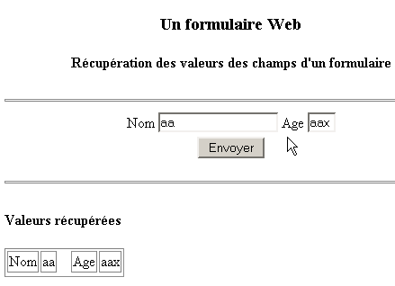
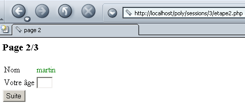

3. Inleiding tot webprogrammering in PHP
3.1. PHP-programmering
Laten we hier nogmaals benadrukken dat PHP een volwaardige programmeertaal is en dat deze, hoewel hij vooral wordt gebruikt bij de ontwikkeling van webapplicaties, ook in andere contexten kan worden ingezet. Het document "PHP aan de hand van voorbeelden", beschikbaar op http://shiva.istia.univ-angers.fr/~tahe/pub/php/php.pdf, behandelt de basisbeginselen van de taal. We gaan er hier vanuit dat deze basiskennis al aanwezig is. Laten we aan de hand van een eenvoudig voorbeeld laten zien hoe een PHP-programma onder Windows wordt uitgevoerd. De volgende code is opgeslagen onder de naam coucou.php.
Dit programma wordt uitgevoerd in een DOS-venster van Windows:
dos>"e:\program files\easyphp\php\php.exe" coucou.php
X-Powered-By: PHP/4.3.0-dev
Content-type: text/html
coucou
Merk op dat de interpreter PHP standaard het volgende verstuurt:
- de interpreter PHP is php.exe en bevindt zich normaal gesproken in de map <php> van de software-installatie.
- de headers HTTP X-Powered-By en Content-type:
- de lege regel die de headers HTTP van de rest van het document scheidt
- het document dat hier wordt gevormd door de tekst die door de functie echo is geschreven
3.2. Het configuratiebestand van de interpreter PHP
Het gedrag van de interpreter PHP wordt ingesteld via een configuratiebestand met de naam php.ini, dat onder Windows in de Windows-map zelf is opgeslagen. Het is een vrij omvangrijk bestand, aangezien het onder Windows en voor versie 4.2 van PHP bijna 1000 regels telt, waarvan gelukkig driekwart uit opmerkingen bestaat. Laten we enkele configuratie-attributen van PHP eens bekijken:
maakt het mogelijk om instructies tussen <? >-tags op te nemen. Bij off moeten deze tussen <?php ... > worden geplaatst | |
in on maakt het mogelijk om de syntaxis <% =variabele %> te gebruiken die door de ASP-technologie (Active Server Pages) wordt gebruikt | |
maakt het mogelijk de header HTTP X-Powered-By: PHP/4.3.0-dev te verzenden. Bij off wordt deze header verwijderd. | |
bepaalt de reikwijdte van de foutopsporing. Hier worden alle fouten (E_ALL) gemeld, met uitzondering van waarschuwingen tijdens de uitvoering (~E_NOTICE) | |
zet de fouten in de stream HTML die naar de klant wordt verzonden. Deze worden dus in de browser weergegeven. Het wordt aanbevolen om deze optie in te stellen op off. | |
de fouten worden opgeslagen in een bestand | |
slaat de laatste opgetreden fout op in de variabele $php_errormsg | |
stelt het bestand voor het opslaan van fouten in (als log_errors=on) | |
vanaf on worden een aantal variabelen globaal. Wordt beschouwd als een beveiligingslek. | |
genereert standaard de header HTTP: Content-type: text/html | |
de lijst met mappen die worden doorzocht op zoek naar de bestanden die vereist zijn door de richtlijnen include of require | |
de map waarin de bestanden worden opgeslagen die de verschillende lopende sessies vastleggen. De betreffende schijf is die waarop PHP is geïnstalleerd. Hier verwijst /temp naar e:\temp |
Dit configuratiebestand beïnvloedt de overdraagbaarheid van het geschreven PHP-programma. Als een webapplicatie namelijk de waarde van een veld C uit een webformulier moet ophalen, kan dit op verschillende manieren gebeuren, afhankelijk van of de configuratievariabele register_globals de waarde on of off heeft:
- off: de waarde wordt opgehaald door $HTTP_GET_VARS["C"] of _GET["C"] of $HTTP_POST_VARS["C"] of $_POST["C"], afhankelijk van de methode (GET/POST) die de klant gebruikt om de formulierwaarden te verzenden
- : idem als hierboven plus $C, omdat de waarde van veld C globaal is gemaakt in een variabele met dezelfde naam als het veld
Als een ontwikkelaar een programma schrijft met de notatie $C omdat de web/PHP-server die hij gebruikt de variabele register_globals tot on heeft, zal dit programma niet meer werken als het wordt overgezet naar een web-/PHP-server waar diezelfde variabele is ingesteld op off. We zullen er dus naar streven om programma’s te schrijven waarbij we het gebruik van functionaliteiten die afhankelijk zijn van de configuratie van de web-/PHP-server vermijden.
3.3. PHP tijdens de uitvoering configureren
Om de overdraagbaarheid van een PHP-programma te verbeteren, kun je zelf bepaalde configuratievariabelen van PHP instellen. Deze worden tijdens de uitvoering van het programma gewijzigd en gelden uitsluitend voor dat programma. Twee functies zijn hierbij nuttig:
geeft de waarde van de configuratievariabele confVariable weer | |
stelt de waarde van de configuratievariabele confVariable in |
Hier volgt een voorbeeld waarin de waarde van de configuratievariabele track_errors wordt ingesteld:
<?php
// waarde van de configuratievariabele track_errors
echo "track_errors=".ini_get("track_errors")."\n";
// wijziging van deze waarde
ini_set("track_errors","off");
// controle
echo "track_errors=".ini_get("track_errors")."\n";
?>
Bij uitvoering krijgt men de volgende resultaten:
E:\data\serge\web\php\poly\intro>"E:\Program Files\EasyPHP\php\php.exe" conf1.php
Content-type: text/html
track_errors=1
track_errors=off
De waarde van de configuratievariabele track_errors was aanvankelijk 1 (~on). We wijzigen deze naar off. Houd er rekening mee dat als onze toepassing afhankelijk is van bepaalde waarden van configuratievariabelen, het verstandig is om deze in het programma zelf te initialiseren.
3.4. Uitvoeringscontext van de voorbeelden
De voorbeelden in dit hand-out worden uitgevoerd met de volgende configuratie:
- PC onder Windows 2000
- Apache-server 1.3
- PHP 4.3
De configuratie van de Apache-server wordt uitgevoerd in het bestand httpd.conf. De volgende regels geven Apache de opdracht om PHP te laden als een in Apache geïntegreerde module en om elk verzoek voor een document met bepaalde extensies, waaronder .php, door te sturen naar de interpreter PHP. Dit is de standaardextensie die we voor onze PHP-programma’s zullen gebruiken.
LoadModule php4_module "E:/Program Files/EasyPHP/php/php4apache.dll"
AddModule mod_php4.c
AddType application/x-httpd-php .phtml .pwml .php3 .php4 .php .php2 .inc
Daarnaast hebben we voor Apache een poly-alias gedefinieerd:
Alias "/poly/" "e:/data/serge/web/php/poly/"
<Directory "e:/data/serge/web/php/poly">
Options Indexes FollowSymLinks Includes
AllowOverride All
#Order allow,deny
Allow from all
</Directory>
Laten we het pad <poly> het pad e:/data/serge/web/php/poly noemen. Als we met een browser het document doc.php bij de Apache-server willen opvragen, gebruiken we de http://localhost/poly/doc.php URL. De Apache-server herkent in URL de alias poly en koppelt vervolgens URL /poly/doc.php aan het document <poly>\doc.php.
3.5. Een eerste voorbeeld
Laten we een eerste web-/PHP-toepassing schrijven. De volgende tekst wordt opgeslagen in het bestand heure.php:
<html>
<head>
<title>Une page php dynamique</title>
</head>
<body>
<center>
<h1>Une page PHP générée dynamiquement</h1>
<h2>
<?php
$maintenant=time();
echo date("j/m/y, h:i:s",$maintenant);
?>
</h2>
<br>
A chaque fois que vous rafraîchissez la page, l'heure change.
</body>
</html>
Als we deze pagina met een browser opvragen, krijgen we het volgende resultaat:

Het dynamische gedeelte van de pagina is gegenereerd door de code PHP:
Wat is er precies gebeurd? De browser heeft de URL-http://localhost/poly/intro/heure.php opgevraagd. De webserver (in dit voorbeeld Apache) heeft dit verzoek ontvangen en heeft, vanwege de extensie .php van het opgevraagde document, vastgesteld dat het dit verzoek moest doorsturen naar de interpreter PHP. Deze analyseert vervolgens het document heure.php en voert alle stukken code uit die zich tussen de tags <?php > en vervangt elk daarvan door de regels die zijn geschreven door de instructies PHP, echo of print. Zo zal de interpreter PHP het bovenstaande stukje code uitvoeren en vervangen door de regel die is geschreven door de instructie echo:
Zodra alle codegedeelten van PHP zijn uitgevoerd, is het document PHP veranderd in een eenvoudig document HTML, dat vervolgens naar de klant wordt verzonden.
We zullen zoveel mogelijk proberen te voorkomen dat de code PHP en de code HTML door elkaar worden gebruikt. Daartoe zou de vorige toepassing als volgt herschreven kunnen worden:
<!-- code PHP -->
<?php
// de huidige tijd ophalen
$maintenant=time();
$maintenant=date("j/m/y, h:i:s",$maintenant);
?>
<!-- code HTML -->
<html>
<head>
<title>Une page php dynamique</title>
</head>
<body>
<center>
<h1>Une page PHP générée dynamiquement</h1>
<h2>
<?php echo $maintenant ?>
</h2>
<br>
A chaque fois que vous rafraîchissez la page, l'heure change.
</body>
</html>
Het resultaat in de browser is identiek:

De tweede versie is beter dan de eerste, omdat er minder code PHP in de code HTML zit. De structuur van de pagina is zo beter zichtbaar. We kunnen nog een stap verder gaan door de code PHP en de code HTML in twee verschillende bestanden te plaatsen. De code PHP wordt opgeslagen in het bestand heure3.php:
<!-- code PHP -->
<?php
// de huidige tijd ophalen
$maintenant=time();
$maintenant=date("j/m/y, h:i:s",$maintenant);
// het antwoord wordt weergegeven
include "heure3-page1.php";
?>
De code HTML is opgeslagen in het bestand heure3-page1.php:
<!-- code HTML -->
<html>
<head>
<title>Une page php dynamique</title>
</head>
<body>
<center>
<h1>Une page PHP générée dynamiquement</h1>
<h2>
<?php echo $maintenant ?>
</h2>
<br>
A chaque fois que vous rafraîchissez la page, l'heure change.
</body>
</html>
Wanneer de browser het document heure3.php opvraagt, wordt dit geladen en geanalyseerd door de interpreter PHP. Bij het tegenkomen van de regel
De interpreter zal het bestand heure3-page1.php opnemen in de broncode van heure3.php en het uitvoeren. Het is dus alsof we de volgende code PHP zouden hebben:
<!-- code PHP -->
<?php
// de huidige tijd wordt opgehaald
$maintenant=time();
$maintenant=date("j/m/y, h:i:s",$maintenant);
?>
<!-- code HTML -->
<html>
<head>
<title>Une page php dynamique</title>
</head>
<body>
<center>
<h1>Une page PHP générée dynamiquement</h1>
<h2>
<?php echo $maintenant ?>
</h2>
<br>
A chaque fois que vous rafraîchissez la page, l'heure change.
</body>
</html>
Het resultaat is hetzelfde als voorheen:

De oplossing om de codes PHP en HTML in verschillende bestanden te plaatsen, zal vervolgens worden toegepast. Dit biedt verschillende voordelen:
- de structuur van de pagina’s die naar de klant worden verzonden, gaat niet verloren in de PHP-code. Zo kunnen ze worden onderhouden door een “webdesigner” met grafische vaardigheden, maar weinig kennis van PHP.
- De PHP-code fungeert als "frontend" voor de verzoeken van klanten. Het doel ervan is de gegevens te berekenen die nodig zijn voor de pagina die als antwoord naar de klant wordt teruggestuurd.
Deze oplossing heeft echter een nadeel: in plaats van dat er slechts één document hoeft te worden geladen, moeten er meerdere documenten worden geladen, wat kan leiden tot prestatieverlies.
3.6. De door een webklant verzonden parameters ophalen
3.6.1. via een POST
Laten we eens kijken naar het volgende formulier waarin de gebruiker twee gegevens moet invullen: een naam en een leeftijd.

Wanneer de gebruiker de velden Nom en Age heeft ingevuld, drukt hij vervolgens op de knop Envoyer, die van het type submit is. De waarden van het formulier worden vervolgens naar de server verzonden. De server stuurt het formulier terug, samen met een tabel waarin de ontvangen waarden worden weergegeven:

De browser vraagt het formulier op bij de volgende applicatie nomage.php:
<?php
// zijn de verwachte parameters aanwezig?
$post=isset($_POST["txtNom"]) && isset($_POST["txtAge"]);
if($post){
// we halen de parameters txtNom en txtAge op die door de klant zijn "gepost"
$nom=$_POST["txtNom"];
$age=$_POST["txtAge"];
} else {
$nom="";
$age="";
}//if
// de pagina wordt weergegeven
include "nomage-p1.php";
?>
Enkele toelichtingen:
- een formulierveld met de naam HTML kan naar de server worden verzonden via de methode GET of de methode POST. Als het wordt verzonden via de methode GET, kan de server het ophalen in de variabele $_GET["champ"] en in de variabele $_POST["champ"] alsdeze wordt verzonden via de methode POST.
- Of een gegeven bestaat, kan worden getest met de functie isset(gegeven), die true retourneert als het gegeven bestaat, en false anders.
- De toepassing nomage.php definieert drie variabelen: $nom voor de naam van het formulier, $age voor de leeftijd en $post om aan te geven of er al dan niet waarden zijn „verzonden”. Deze drie variabelen worden doorgegeven aan de pagina nomage-p1.php. Opgemerkt moet worden dat, hoewel deze pagina betrokken is bij het opstellen van het antwoord aan de klant, de klant hiervan niet op de hoogte is. Voor de klant is het de applicatie nomage.php die hem antwoordt.
- De eerste keer dat een klant de applicatie nomage.php opvraagt, is $post onjuist. Bij deze eerste aanroep worden er namelijk geen formulierwaarden naar de server verzonden.
De pagina nomage-p1.php ziet er als volgt uit:
<html>
<head>
<title>Formulaire web</title>
</head>
<body>
<center>
<h3>Un formulaire Web</h3>
<h4>Récupération des valeurs des champs d'un formulaire</h4>
<hr>
<form name="frmPersonne" method="post">
<table>
<tr>
<td>Nom</td>
<td><input type="text" value="<?php echo $nom ?>" name="txtNom" size="20"></td>
<td>Age</td>
<td><input type="text" value="<?php echo $age ?>" name="txtAge" size="3"></td>
<tr>
</table>
<input type="submit" name="cmdEffacer" value="Envoyer">
</form>
</center>
<hr>
<?php
// zijn er waarden verzonden?
if ($post) {
?>
<h4>Valeurs récupérées</h4>
<table border="1">
<tr>
<td>Nom</td><td><?php echo $nom ?></td>
<td width="10"></td>
<td>Age</td><td><?php echo $age ?></td>
<tr>
</table>
<?php } ?>
</body>
</html>
De applicatie nomage-p1.php toont het formulier frmPersonne. Dit wordt gedefinieerd door de tag:
Aangezien het attribuut action van de tag niet is gedefinieerd, zal de browser de gegevens van het formulier doorsturen naar de URL die hij heeft opgevraagd om het te verkrijgen, namelijk c.a.d. de applicatie nomage.php.
Laten we de twee gevallen onderscheiden waarin de applicatie nomage.php wordt aangeroepen:
- Het is de eerste keer dat de gebruiker de applicatie oproept. De applicatie nomage.php roept dus de applicatie nomage-p1.php op en verstrekt daarbij de waarden ($nom,$age,$post)=("","",false). De applicatie nomage-p1.php geeft vervolgens een leeg formulier weer.
- De gebruiker vult het formulier in en gebruikt de knop Envoyer (van het type submit). De waarden van het formulier (txtNom, txtAge) worden vervolgens „verzonden“ (method="post" in <form>) naar de applicatie nomage.php (attribuut action niet gedefinieerd in <form>). De toepassing nomage.php berekent ($nom, $age,$post) = (txtNom, txtAge, waar) en stuurt deze door naar de toepassing nomage-p1.php, die vervolgens een reeds ingevuld formulier en de tabel met de opgehaalde waarden weergeeft.
3.6.2. door een GET
Indien de waarden van het formulier via een GET naar de server worden verzonden, wordt de toepassing nomage.php de volgende toepassing nomage2.php:
<?php
// zijn de verwachte parameters aanwezig?
$get=isset($_GET["txtNom"]) && isset($_GET["txtAge"]);
if($get){
// de parameters txtNom en txtAge "GETTés" worden door de client opgehaald
$nom=$_GET["txtNom"];
$age=$_GET["txtAge"];
} else {
$nom="";
$age="";
}//als
// wordt de pagina weergegeven
include "nomage-p2.php";
?>
De toepassing nomage-p2.php is identiek aan de toepassing nomage-p1.php, op de volgende details na:
- de tag form is gewijzigd:
- de toepassing haalt nu een variabele $get op in plaats van $post:
Tijdens de uitvoering, wanneer waarden in het formulier worden ingevoerd en naar de server worden verzonden, geeft de browser in het veld URL aan dat de waarden zijn verzonden via de methode GET:

3.7. De door een webclient verzonden headers HTTP ophalen
Wanneer een browser een verzoek indient bij een webserver, stuurt hij een aantal HTTP-headers mee. Soms is het interessant om toegang te hebben tot deze headers. In eerste instantie kan men gebruikmaken van de associatieve tabel $_SERVER. Deze bevat diverse gegevens die door de webserver worden verstrekt, waaronder onder andere de door de client geleverde HTTP-headers. Laten we eens kijken naar het volgende programma dat alle waarden van de $_SERVER-array weergeeft:
<?php
// toont de variabelen die verband houden met de webserver
// er wordt platte tekst verzonden
header("Content-type: text/plain");
// doorlopen van de associatieve array $_SERVER
reset($_SERVER);
while (list($clé,$valeur)=each($_SERVER)){
echo "$clé : $valeur\n";
}//while
?>
Laten we deze code opslaan in headers.php en deze URL openen in een browser:

We ontvangen een aantal gegevens, waaronder de HTTP-headers die door de browser worden verzonden. Dit zijn de waarden die horen bij de sleutels die beginnen met HTTP. Laten we enkele van de hierboven verkregen gegevens nader bekijken:
documenttypes die door de webclient worden geaccepteerd | |
in documenten geaccepteerde tekensoorten | |
Toegestane coderingstypen voor documenten | |
Toegestane taaltypen voor documenten | |
type verbinding met de server. Keep-Alive: de server moet de verbinding openhouden nadat hij zijn antwoord heeft gegeven | |
? maximale duur dat de verbinding open blijft | |
door de client opgevraagde hostmachine | |
identiteit van de client | |
adres IP van de client | |
door de klant gebruikte communicatiepoort | |
protocol HTTP dat door de server wordt gebruikt | |
door de client gebruikte opvraagmethode (GET of POST) | |
verzoek ?param1=val1¶m2=val2&... geplaatst achter het aangevraagde URL (methode GET) |
Door de code van het vorige programma enigszins aan te passen, kunnen we alleen de HTTP-headers ophalen:
<?php
// geeft de variabelen weer die verband houden met de webserver
// er wordt platte tekst verzonden
header("Content-type: text/plain");
// doorlopen van de associatieve array $_SERVER
reset($_SERVER);
while (list($clé,$valeur)=each($_SERVER)){
// header HTTP ?
if(strtolower(substr($clé,0,4))=="http")
echo substr($clé,5)." : $valeur\n";
}//while
?>
Het resultaat in de browser is als volgt:

Als men een specifieke koptekst HTTP wil, schrijft men bijvoorbeeld $_SERVER["HTTP_ACCEPT"].
3.8. Omgevingsinformatie ophalen
De web-/PHP-server draait in een omgeving waarvan we de kenmerken kunnen achterhalen via de tabel $_ENV, waarin diverse kenmerken van de uitvoeringsomgeving zijn opgeslagen. Laten we eens kijken naar de volgende toepassing env1.php:
<?php
// de variabelen weergeven die verband houden met de webserver
// we verzenden platte tekst
header("Content-type: text/plain");
// doorlopen van de associatieve array $_ENV
reset($_ENV);
while (list($clé,$valeur)=each($_ENV)){
echo "$clé : $valeur\n";
}//while
?>
Dit levert het volgende resultaat op in een browser (gedeeltelijke weergave):

Hierboven is bijvoorbeeld te zien dat de web-/PHP-server draait onder Windows OS NT.
3.9. Voorbeelden
3.9.1. Dynamische formuliergeneratie - 1
We nemen als voorbeeld het genereren van een formulier met slechts één besturingselement: een keuzelijst. De inhoud van deze keuzelijst wordt dynamisch samengesteld met waarden uit een array. In de praktijk worden deze vaak uit een database gehaald. Het formulier ziet er als volgt uit:

Als we in het bovenstaande voorbeeld Envoyer invoeren, krijgen we het volgende antwoord:

De code HTML van het oorspronkelijke formulier, zodra dit is gegenereerd, is als volgt:
<html>
<head>
<title>Génération de formulaire</title>
</head>
<body>
<h2>Choisissez un nombre</h2>
<hr>
<form name="frmvaleurs" method="post" action="valeurs.php">
<select name="cmbValeurs" size="1">
<option>un</option>
<option>deux</option>
<option>trois</option>
<option>quatre</option>
<option>cinq</option>
<option>six</option>
<option>sept</option>
<option>huit</option>
<option>neuf</option>
<option>dix</option>
</select>
<input type="submit" value="Envoyer" name="cmdEnvoyer">
</form>
</body>
</html>
De applicatie PHP bestaat uit een hoofdpagina valeurs.php die zowel wordt aangeroepen om het oorspronkelijke formulier (de lijst met waarden) op te halen als om de waarden daarvan te verwerken en het antwoord (de gekozen waarde) te leveren. De applicatie genereert twee verschillende pagina's:
- de pagina met het oorspronkelijke formulier, die wordt gegenereerd door het programma valeurs-p1.php
- de pagina met het antwoord voor de gebruiker, die wordt gegenereerd door het programma valeurs-p2.php
De toepassing valeurs.php is als volgt:
<?php
// de waardenlijst
$valeurs=array("un","deux","trois","quatre","cinq","six","sept","huit","neuf","dix");
// zijn de verwachte parameters aanwezig
$requêteVide=! isset($_POST["cmbValeurs"]);
// de keuze van de gebruiker wordt opgehaald
if ($requêteVide){
// oorspronkelijke aanvraag
include "valeurs-p1.php";
}else{
// antwoord op een POST
$choix=$_POST["cmbValeurs"];
include "valeurs-p2.php";
}
?>
Het definieert de waardetabel en roept valeurs-p1.php aan om het startformulier te genereren als de aanvraag van de klant leeg was, of valeurs-p2.php om het antwoord te genereren als er een geldige aanvraag was. Het programma valeurs1-php is als volgt:
<html>
<head>
<title>Génération de formulaire</title>
</head>
<body>
<h2>Choisissez un nombre</h2>
<hr>
<form name="frmvaleurs" method="post" action="valeurs.php">
<select name="cmbValeurs" size="1">
<?php
for($i=0;$i<count($valeurs);$i++){
echo "<option>$valeurs[$i]</option>\n";
}//voor
?>
</select>
<input type="submit" value="Envoyer" name="cmdEnvoyer">
</form>
</body>
</html>
De lijst met waarden voor de keuzelijst wordt dynamisch gegenereerd op basis van de tabel $valeurs die is doorgegeven door valeurs.php. Het programma valeurs-p2.php genereert het antwoord:
<html>
<head>
<title>réponse</title>
</head>
<body>
<h2>Vous avez choisi le nombre <?php echo $choix ?></h2>
</body>
</html>
Hier wordt alleen de waarde van de variabele $choix weergegeven, die ook door valeurs.php wordt doorgegeven.
3.9.2. Dynamische formuliergeneratie - 2
We nemen het vorige voorbeeld weer op en passen het als volgt aan. Het voorgestelde formulier is nog steeds hetzelfde:

Is het antwoord anders:

In het antwoord wordt het formulier teruggestuurd, met daaronder het door de gebruiker gekozen getal. Dit getal is overigens het getal dat als geselecteerd wordt weergegeven in de lijst die in het antwoord wordt getoond.
De code van valeurs.php is als volgt:
<?php
// configuratie
ini_set("register_globals","off");
// de tabel met waarden
$valeurs=array("un","deux","trois","quatre","cinq","six","sept","huit","neuf","dix");
// de eventuele keuze van de gebruiker wordt opgehaald
$choix=$_POST["cmbValeurs"];
// het antwoord wordt weergegeven
include "valeurs-p1.php";
?>
Merk op dat we hier zorgvuldig PHP hebben geconfigureerd zodat er geen globale variabelen zijn. Dit is over het algemeen een verstandige voorzorgsmaatregel, aangezien globale variabelen veiligheidsproblemen kunnen veroorzaken. Een alternatief is om alle variabelen die je gebruikt te initialiseren. Dit heeft tot gevolg dat een eventuele globale variabele met dezelfde naam wordt ‘overschreven’.
De formulierpagina wordt weergegeven door valeurs-p1.php:
<html>
<head>
<title>Génération de formulaire</title>
</head>
<body>
<h2>Choisissez un nombre</h2>
<hr>
<form name="frmvaleurs" method="post" action="valeurs.php">
<select name="cmbValeurs" size="1">
<?php
for($i=0;$i<count($valeurs);$i++){
// als de huidige optie gelijk is aan de keuze, wordt deze geselecteerd
if (isset($choix) && $choix==$valeurs[$i])
echo "<option selected>$valeurs[$i]</option>\n";
else echo "<option>$valeurs[$i]</option>\n";
}//for
?>
</select>
<input type="submit" value="Envoyer" name="cmdEnvoyer">
</form>
<?php
// vervolg op de pagina
if(isset($choix)){
echo "<hr>\n";
echo "<h3>Vous avez choisi le nombre $choix</h3>\n";
}
?>
</body>
</html>
Het programma dat de pagina genereert, maakt gebruik van de variabele $choix die door het programma valeurs.php wordt doorgegeven. Hierbij valt op dat de structuur HTML van de pagina steeds meer „vervuild” raakt door code van PHP. De front-end valeurs.php zou meer werk kunnen verrichten, zoals blijkt uit de volgende nieuwe versie:
<?php
// configuratie
ini_set("register_globals","off");
// de tabel met waarden
$valeurs=array("un","deux","trois","quatre","cinq","six","sept","huit","neuf","dix");
// de eventuele keuze van de gebruiker wordt opgehaald
$choix=$_POST["cmbValeurs"];
// de lijst met weer te geven waarden wordt berekend
$HTMLvaleurs="";
for($i=0;$i<count($valeurs);$i++){
// als de huidige optie gelijk is aan de keuze, wordt deze geselecteerd
if (isset($choix) && $choix==$valeurs[$i])
$HTMLvaleurs.="<option selected>$valeurs[$i]</option>\n";
else $HTMLvaleurs.="<option>$valeurs[$i]</option>\n";
}//for
// wordt het tweede deel van de pagina berekend
$HTMLpart2="";
if(isset($choix)){
$HTMLpart2="<hr>\n";
$HTMLpart2.="<h3>Vous avez choisi le nombre $choix</h3>\n";
}//if
// wordt het antwoord weergegeven
include "valeurs-p2.php";
?>
De pagina wordt nu gegenereerd door het volgende programma valeurs-p2.php:
<html>
<head>
<title>Génération de formulaire</title>
</head>
<body>
<h2>Choisissez un nombre</h2>
<hr>
<form name="frmvaleurs" method="post" action="valeurs.php">
<select name="cmbValeurs" size="1">
<?php
// weergave van de lijst met waarden
echo $HTMLvaleurs;
?>
</select>
<input type="submit" value="Envoyer" name="cmdEnvoyer">
</form>
<?php
// weergave deel 2
echo $HTMLpart2;
?>
</body>
</html>
De code HTML is nu ontdaan van een groot deel van de code PHP. Laten we echter nog eens het doel in herinnering brengen van de opsplitsing in een front-endprogramma dat de aanvraag van een klant analyseert en verwerkt, en programma's die uitsluitend belast zijn met het weergeven van pagina's die zijn geconfigureerd met gegevens die door de front-end worden doorgegeven: het is bedoeld om het werk van de PHP-ontwikkelaar te scheiden van dat van de grafisch ontwerper. De ontwikkelaar PHP werkt aan de front-end, de grafisch ontwerper aan de webpagina’s. In onze nieuwe versie kan de grafisch ontwerper bijvoorbeeld niet meer aan deel 2 van de pagina werken, aangezien hij geen toegang meer heeft tot de code HTML daarvan. In de eerste versie kon hij dat wel. Geen van beide methoden is dus perfect.
3.9.3. Dynamische formuliergeneratie - 3
We nemen hetzelfde probleem als eerder, maar deze keer worden de waarden uit een database gehaald. In ons voorbeeld is dat de database MySQL:
- de database heet dbValeurs
- de eigenaar is admDbValeurs met het wachtwoord mdpDbValeurs
- de database bevat één enkele tabel met de naam tvaleurs
- deze tabel heeft slechts één geheel getalveld met de naam ‘valeur’
dos> mysql --database=dbValeurs --user=admDbValeurs --password=mdpDbValeurs
mysql> show tables;
+---------------------+
| Tables_in_dbValeurs |
+---------------------+
| tvaleurs |
+---------------------+
1 row in set (0.00 sec)
mysql> describe tvaleurs;
+--------+---------+------+-----+---------+-------+
| Field | Type | Null | Key | Default | Extra |
+--------+---------+------+-----+---------+-------+
| valeur | int(11) | | | 0 | |
+--------+---------+------+-----+---------+-------+
mysql> select * from tvaleurs;
+--------+
| valeur |
+--------+
| 0 |
| 1 |
| 2 |
| 3 |
| 4 |
| 6 |
| 5 |
| 7 |
| 8 |
| 9 |
+--------+
10 rows in set (0.00 sec)
In een applicatie die gebruikmaakt van een database, zijn doorgaans de volgende stappen te vinden:
- Verbinding maken met de SGBD
- Verzending van query's SQL naar een database van het type SGBD
- Verwerking van de resultaten van deze query's
- De verbinding met SGBD verbreken
Stappen 2 en 3 worden herhaaldelijk uitgevoerd; de verbinding wordt pas verbroken aan het einde van het gebruik van de database. Dit is een vrij standaardprocedure voor iedereen die wel eens interactief met een database heeft gewerkt. De volgende tabel bevat de instructies PHP voor het uitvoeren van deze verschillende bewerkingen met de SGBD en MySQL:
$connexion=mysql_pconnect($hote,$user,$pwd) $connexion=mysql_connect($hote,$user,$pwd) $hote: internetnaam van de machine waarop SGBD en MySQL worden uitgevoerd. Het is namelijk mogelijk om met externe SGBD MySQL te werken. $user: naam van een bekende gebruiker van SGBD MySQL $pwd: zijn wachtwoord $connexion: de verbinding is tot stand gebracht mysql_pconnect maakt een permanente verbinding met SGBD en MySQL. Zo'n verbinding wordt aan het einde van het script niet gesloten. Ze blijft open. Wanneer er dus een nieuwe verbinding met SGBD moet worden geopend, zoekt PHP naar een bestaande verbinding van dezelfde gebruiker. Als hij die vindt, gebruikt hij die. Dit levert tijdwinst op. mysql_connect maakt een niet-persistente verbinding aan, die dus wordt gesloten zodra het werk met SGBD en MySQL is voltooid. | |
$résultats=mysql_db_query($base,$requête,$connexion) $base: de basis van MySQL waarmee we gaan werken $requête: een query op SQL (insert, delete, update, select, ...) $connexion: de verbinding tussen SGBD en MySQL $résultats: de resultaten van de query – verschillen naargelang de query een select-opdracht is of een bijwerkingsbewerking (insert, update, delete, ...) | |
$résultats=mysql_db_query($base,"select ...",$connexion) Het resultaat van een select-opdracht is een tabel, dus een verzameling rijen en kolommen. Deze tabel is toegankelijk via $résultats. $ligne=mysql_fetch_row($résultats) leest een rij uit de tabel en plaatst deze in $ligne in de vorm van een array. $ligne[i] is dus kolom i van de opgehaalde rij. De functie mysql_fetch_row kan herhaaldelijk worden aangeroepen. Elke keer leest deze functie een nieuwe rij uit de tabel $résultats. Wanneer het einde van de tabel is bereikt, retourneert de functie de waarde false. Zo kan de tabel $résultats als volgt worden verwerkt: while($rij = mysql_fetch_row($resultaten)){ // verwerk de huidige rij $rij }//while | |
$résultats=mysql_db_query($base,"insert ...",$connexion) De waarde $résultats is waar of onwaar, afhankelijk van of de bewerking is geslaagd of mislukt. Bij succes geeft de functie mysql_affected_rows het aantal regels weer dat door de bijwerkingsbewerking is gewijzigd. | |
mysql_close($verbinding) $connexion: een verbinding met SGBD MySQL |
De code van de front-end valeurs.php wordt als volgt:
<?php
// configuratie
ini_set("register_globals","off");
ini_set("display_errors","off");
ini_set("track_errors","on");
// de waardentabel
list($erreur,$valeurs)=getValeurs();
// is er een fout opgetreden?
if($erreur){
// foutpagina weergeven
include "valeurs-err.php";
// einde
return;
}//if
// wordt de eventuele keuze van de gebruiker opgehaald
$choix=$_POST["cmbValeurs"];
// de lijst met weer te geven waarden wordt berekend
$HTMLvaleurs="";
for($i=0;$i<count($valeurs);$i++){
// als de huidige optie gelijk is aan de keuze, wordt deze geselecteerd
if (isset($choix) && $choix==$valeurs[$i])
$HTMLvaleurs.="<option selected>$valeurs[$i]</option>\n";
else $HTMLvaleurs.="<option>$valeurs[$i]</option>\n";
}//for
// wordt het tweede deel van de pagina berekend
$HTMLpart2="";
if(isset($choix)){
$HTMLpart2="<hr>\n";
$HTMLpart2.="<h3>Vous avez choisi le nombre $choix</h3>\n";
}//als
// wordt het antwoord weergegeven
include "valeurs-p1.php";
// einde
return;
// ------------------------------------------------------------------------
function getValeurs(){
// haalt de waarden op uit een database MySQL
$user="admDbValeurs";
$pwd="mdpDbValeurs";
$db="dbValeurs";
$hote="localhost";
$table="tvaleurs";
$champ="valeur";
// een permanente verbinding met de server openen MySQL
// of anders een normale verbinding
($connexion=mysql_pconnect($hote,$user,$pwd))
|| ($connexion=mysql_connect($hote,$user,$pwd));
if(! $connexion)
return array("Base de données indisponible(".mysql_error()."). Veuillez recommencer ultérieurement.");
// de waarden ophalen
$selectValeurs=mysql_db_query($db,"select $champ from $table",$connexion);
if(! $selectValeurs)
return array("Base de données indisponible(".mysql_error()."). Veuillez recommencer ultérieurement.");
// de waarden worden in een array geplaatst
$valeurs=array();
while($ligne=mysql_fetch_row($selectValeurs)){
$valeurs[]=$ligne[0];
}//while
// de verbinding wordt verbroken (als het een permanente verbinding is, wordt deze in feite niet verbroken)
mysql_close($connexion);
// het resultaat wordt teruggestuurd
return array("",$valeurs);
}//getValeurs
?>
Deze keer worden de waarden die in de keuzelijst moeten worden geplaatst niet door een array geleverd, maar door de functie getValeurs(). Deze functie:
- opent een permanente verbinding (mysql_pconnect) met de server mySQL door een geregistreerde gebruikersnaam en het bijbehorende wachtwoord door te geven.
- Zodra de verbinding tot stand is gebracht, wordt een verzoek select verzonden om de waarden op te halen die aanwezig zijn in de tabel tvaleurs van de database dbValeurs.
- Het resultaat van select wordt in de tabel $valeurs geplaatst, die aan het aanroepende programma wordt teruggegeven.
- De functie retourneert in feite een array met twee resultaten ($erreur, $valeurs), waarbij het eerste element een eventuele foutmelding is of, indien er geen fout is, de lege tekenreeks.
- Het aanroepende programma controleert of er een fout is opgetreden en zo ja, laat het de pagina valeurs-err.php weergeven. Deze ziet er als volgt uit:
<html>
<head>
<title>Erreur</title>
</head>
<body>
<h3>L'erreur suivante s'est produite</h3>
<font color="red">
<h4><?php echo $erreur ?></h4>
</font>
</body>
</html>
- Als er geen fout is opgetreden, beschikt het aanroepende programma over de waarden in de tabel $valeurs. We komen dus weer bij het vorige probleem terecht.
Hier volgen twee uitvoervoorbeelden:
- met fout

- zonder fout

3.9.4. Dynamische formuliergeneratie - 4
Wat zou er in het vorige voorbeeld gebeuren als we SGBD zouden wijzigen? Als we bijvoorbeeld zouden overschakelen van MySQL naar Oracle of SQL Server? Dan zou de functie getValeurs(), die de waarden levert, herschreven moeten worden. Het voordeel van het samenbrengen van de code die nodig is om de in de lijst weer te geven waarden op te halen in één functie, is dat de aan te passen code duidelijk afgebakend is en niet verspreid zit over het hele programma. De functie getValeurs() kan zo worden herschreven dat deze onafhankelijk is van de gebruikte SGBD. Het volstaat dat deze functie werkt met de driver ODBC van SGBD in plaats van rechtstreeks met SGBD.
Er zijn talrijke databases op de markt. Om de toegang tot databases onder MS Windows te standaardiseren, heeft Microsoft een interface ontwikkeld met de naam ODBC (Open DataBase Connectivity). Deze laag verbergt de specifieke kenmerken van elke database achter een standaardinterface. Onder Windows zijn er talrijke stuurprogramma’s die de toegang tot databases vergemakkelijken. Hier volgt bijvoorbeeld een lijst met stuurprogramma’s die op een Windows-computer zijn geïnstalleerd:

Ook de SGBD MySQL heeft een stuurprogramma ODBC. Een toepassing die gebruikmaakt van ODBC-stuurprogramma’s kan alle bovengenoemde databases gebruiken zonder dat er iets hoeft te worden herschreven.
 |
Laten we onze database MySQL dbValeurs toegankelijk maken via een stuurprogramma ODBC. De onderstaande procedure geldt voor Windows 2000. Voor Win9x-systemen is de procedure vrijwel identiek. We activeren de bronbeheerder ODBC:

Gebruik de knop [Add] om een nieuwe gegevensbron ODBC toe te voegen:

Selecteer de driver ODBC MySQL, voer [Terminer] in en geef vervolgens de kenmerken van de gegevensbron op:

de naam die aan de gegevensbron is gegeven: ODBC (odbc-waarden) | |
de naam van de machine waarop SGBD en MySQL draaien en die de gegevensbron beheert (localhost) | |
de naam van de database MySQL die de gegevensbron is (dbValeurs) | |
een gebruiker met voldoende toegangsrechten voor de te beheren database MySQL (admDbValeurs) | |
zijn wachtwoord (mdpDbValeurs) |
PHP kan werken met stuurprogramma's ODBC. De volgende tabel geeft de functies weer die nuttig zijn om te kennen:
$connexion=odbc_pconnect($dsn,$user,$pwd) $connexion=odbc_connect($dsn,$user,$pwd) $dsn: naam DSN (Data Source Name) van de machine waarop SGBD wordt uitgevoerd $user: naam van een bekende gebruiker van SGBD $pwd: zijn wachtwoord $connexion: de aangemaakte verbinding odbc_pconnect maakt een permanente verbinding met SGBD. Een dergelijke verbinding wordt aan het einde van het script niet gesloten. Deze blijft openstaan. Wanneer er dus een nieuwe verbinding met SGBD moet worden geopend, zoekt PHP naar een bestaande verbinding die bij dezelfde gebruiker hoort. Als deze wordt gevonden, wordt deze gebruikt. Dit levert een tijdwinst op. odbc_connect maakt een niet-persistente verbinding aan, die dus wordt gesloten zodra het werk met SGBD is voltooid. | |
$requêtePréparée=odbc_prepare($connexion,$requête) $requête: een query SQL (insert, delete, update, select, ...) $connexion: de verbinding met SGBD Analyseert de query $requête en bereidt de uitvoering ervan voor. Naar de aldus "voorbereide" query wordt verwezen via het resultaat $requêtePréparée. Het voorbereiden van een query voor uitvoering is niet verplicht, maar verbetert de prestaties omdat de analyse van de query slechts één keer wordt uitgevoerd. Vervolgens wordt de uitvoering van de voorbereide query aangevraagd. Als de uitvoering van een niet-voorbereide query herhaaldelijk wordt aangevraagd, wordt deze telkens opnieuw geanalyseerd, wat onnodig is. Zodra de query is voorbereid, wordt deze uitgevoerd door $res=odbc_execute($requêtePréparée) waar of onwaar, afhankelijk van of de uitvoering van de query al dan niet slaagt | |
Het resultaat van een select-query is een tabel, dus een verzameling rijen en kolommen. Deze tabel is toegankelijk via $requêtePréparée. $res=odbc_fetch_row($requêtePréparée) leest een rij uit de resultatentabel van select. Geeft ‘waar’ of ‘onwaar’ terug, afhankelijk van of de uitvoering van de query slaagt of niet. De elementen van de opgehaalde rij zijn beschikbaar via de functie odbc_result: $val=odbc_result($requêtePréparée,i): kolom i van de zojuist gelezen rij $val=odbc_result($requêtePréparée,"nomColonne"): kolom nomColonne van de zojuist gelezen regel De functie odbc_fetch_row kan herhaaldelijk worden aangeroepen. Telkens leest deze een nieuwe regel uit de resultatentabel. Wanneer het einde van de tabel is bereikt, retourneert de functie de waarde false. Zo kan de resultatentabel als volgt worden gebruikt: | |
odbc_close($verbinding) $connexion: een verbinding met SGBD MySQL |
De functie getValeurs(), die verantwoordelijk is voor het ophalen van de waarden uit de database ODBC, is als volgt:
// ------------------------------------------------------------------------
function getValeurs(){
// haalt de waarden op uit een database MySQL
$user="admDbValeurs";
$pwd="mdpDbValeurs";
$db="dbValeurs";
$dsn="odbc-valeurs";
$table="tvaleurs";
$champ="valeur";
// opent een permanente verbinding met de server MySQL
// of anders een normale verbinding
($connexion=odbc_pconnect($dsn,$user,$pwd))
|| ($connexion=odbc_connect($dsn,$user,$pwd));
if(! $connexion)
return array("1 - Base de données indisponible(".odbc_error()."). Veuillez recommencer ultérieurement.");
// de waarden ophalen
$selectValeurs=odbc_prepare($connexion,"select $champ from $table");
if(! odbc_execute($selectValeurs))
return array("2 - Base de données indisponible(".odbc_error()."). Veuillez recommencer ultérieurement.");
// de waarden worden in een array geplaatst
$valeurs=array();
while(odbc_fetch_row($selectValeurs)){
$valeurs[]=odbc_result($selectValeurs,$champ);
}//while
// de verbinding wordt gesloten (als het een permanente verbinding is, wordt deze in feite niet gesloten)
odbc_close($connexion);
// het resultaat wordt teruggestuurd
return array("",$valeurs);
}//getValeurs
?>
Als we de nieuwe applicatie uitvoeren zonder de database odbc-valeurs te activeren, krijgen we het volgende resultaat:

Opgemerkt moet worden dat de foutcode die door de ODBC-driver wordt geretourneerd (odbc_error()=S1000) weinig duidelijk is. Als de database odbc-valeurs beschikbaar wordt gemaakt, krijgt men dezelfde resultaten als voorheen.
Concluderend kan worden gesteld dat deze oplossing goed is voor het onderhoud van de applicatie. Als de database namelijk moet worden gewijzigd, hoeft de applicatie zelf niet te worden aangepast. De systeembeheerder maakt dan gewoon een nieuwe gegevensbron ODBC aan voor de nieuwe database. Met het oog op het onderhoud zou het goed zijn om de toegangsparameters voor de database ($dsn, $user, $pwd) in een apart bestand op te slaan dat de applicatie bij het opstarten laadt (include).
3.9.5. Waarden uit een formulier ophalen
We hebben al meerdere keren de waarden van een formulier opgehaald die door een webclient zijn verzonden. Het volgende voorbeeld toont een formulier met de meest gangbare HTML-componenten en is bedoeld om de door de clientbrowser verzonden parameters op te halen. Het formulier ziet er als volgt uit:

Het wordt vooraf ingevuld weergegeven. Vervolgens kan de gebruiker het wijzigen:

Als hij op de knop [Envoyer] drukt, stuurt de server hem de lijst met waarden van het formulier terug:

Het formulier is een statische pagina HTML balises.html:
<html>
<head>
<title>balises</title>
<script language="JavaScript">
function effacer(){
alert("Vous avez cliqué sur le bouton Effacer");
}//wissen
</script>
</head>
<body background="/images/standard.jpg">
<form method="POST" action="parameters.php">
<table border="0">
<tr>
<td>Etes-vous marié(e)</td>
<td>
<input type="radio" value="oui" name="R1">Oui
<input type="radio" name="R1" value="non" checked>Non
</td>
</tr>
<tr>
<td>Cases à cocher</td>
<td>
<input type="checkbox" name="C1" value="un">1
<input type="checkbox" name="C2" value="deux" checked>2
<input type="checkbox" name="C3" value="trois">3
</td>
</tr>
<tr>
<td>Champ de saisie</td>
<td>
<input type="text" name="txtSaisie" size="20" value="qqs mots">
</td>
</tr>
<tr>
<td>Mot de passe</td>
<td>
<input type="password" name="txtMdp" size="20" value="unMotDePasse">
</td>
</tr>
<tr>
<td>Boîte de saisie</td>
<td>
<textarea rows="2" name="areaSaisie" cols="20">
ligne1
ligne2
ligne3
</textarea>
</td>
</tr>
<tr>
<td>combo</td>
<td>
<select size="1" name="cmbValeurs">
<option>choix1</option>
<option selected>choix2</option>
<option>choix3</option>
</select>
</td>
</tr>
<tr>
<td>liste à choix simple</td>
<td>
<select size="3" name="lst1">
<option selected>liste1</option>
<option>liste2</option>
<option>liste3</option>
<option>liste4</option>
<option>liste5</option>
</select>
</td>
</tr>
<tr>
<td>liste à choix multiple</td>
<td>
<select size="3" name="lst2[]" multiple>
<option selected>liste1</option>
<option>liste2</option>
<option selected>liste3</option>
<option>liste4</option>
<option>liste5</option>
</select>
</td>
</tr>
<tr>
<td>bouton</td>
<td>
<input type="button" value="Effacer" name="cmdEffacer" onclick="effacer()">
</td>
</tr>
<tr>
<td>envoyer</td>
<td>
<input type="submit" value="Envoyer" name="cmdRenvoyer">
</td>
</tr>
<tr>
<td>rétablir</td>
<td>
<input type="reset" value="Rétablir" name="cmdRétablir">
</td>
</tr>
</table>
<input type="hidden" name="secret" value="uneValeur">
</form>
</body>
</html>
De onderstaande tabel geeft een overzicht van de rol van de verschillende tags in dit document en de waarde die door PHP wordt opgehaald voor de verschillende soorten formuliercomponenten. De waarde van een veld met de naam HTML C kan worden verzonden via een POST of een GET. In het eerste geval wordt deze opgehaald in de variabele $_GET["C"] en in het tweede geval in de variabele $_POST["C"]. In de volgende tabel wordt uitgegaan van het gebruik van een POST.
Controle | tag HTML | waarde opgehaald door PHP |
<form method="POST" > | ||
<input type="text" name="txtSaisie" size="20" value="een paar woorden"> | $_POST["txtSaisie"]: waarde in het veld txtSaisie van het formulier | |
<input type="password" name="txtMdp" size="20" value="unMotDePasse"> | $_POST["txtmdp"]: waarde in het veld txtMdp van het formulier | |
<textarea rows="2" name="areaSaisie" cols="20"> regel1 regel 2 regel 3 </textarea> | $_POST["areaSaisie"]: regels die in het veld areaSaisie zijn opgenomen in de vorm van één enkele tekenreeks: "ligne1\r\nligne2\r\nligne3". De regels worden van elkaar gescheiden door de tekenreeks "\r\n". | |
<input type="radio" value="Ja" name="R1">Ja <input type="radio" name="R1" value="nee" checked>Nee | $_POST["R1"]: waarde (=value) van de aangevinkte keuzeknop "ja" of "nee", al naar gelang het geval. | |
<input type="checkbox" name="C1" value="één">1 <input type="checkbox" name="C2" value="twee" checked>2 <input type="checkbox" name="C3" value="drie">3 | $_POST["C1"]: waarde (=value) van het selectievakje als het is aangevinkt; anders bestaat de variabele niet. Dus als het selectievakje C1 is aangevinkt, is $_POST["C1"] gelijk aan "één"; anders bestaat $_POST["C1"] niet. | |
<select size="1" name="cmbValeurs"> <option>keuze1</option> <option selected>keuze2</option> <option>keuze3</option> </select> | $_POST["cmbValeurs"]: geselecteerde optie in de lijst, bijvoorbeeld "keuze3". | |
<select size="3" name="lst1"> <option selected>lijst1</option> <option>lijst2</option> <option>lijst3</option> <option>lijst4</option> <option>lijst5</option> </select> | $_POST["lst1"]: geselecteerde optie in de lijst, bijvoorbeeld "lijst5". | |
<select size="3" name="lst2[]" multiple> <option>lijst1</option> <option>lijst2</option> <option selected>lijst3</option> <option>lijst4</option> <option>lijst5</option> </select> | $_POST["lst2"]: tabel met de geselecteerde opties uit de lijst, bijvoorbeeld ["liste3,"liste5"]. Let op de specifieke syntaxis van de tag HTML voor dit specifieke geval: lst2[]. | |
<input type="hidden" name="secret" value="uneValeur"> | $_POST["secret"]: waarde (=value) van het veld, hier "uneValeur". |
In ons voorbeeld worden de waarden van het formulier doorgestuurd naar het programma parameters.php:
De code van dit laatste programma is als volgt:
<?php
// configuratie
ini_set("register_globals","off");
ini_set("display_errors","off");
// aanroepmethode
$méthode=$_SERVER["REQUEST_METHOD"];
// parameters ophalen
// dit hangt af van de methode waarmee deze worden verzonden
if($méthode=="GET")
$param=$_GET;
else $param=$_POST;
$R1=$param["R1"];
$C1=$param["C1"];
$C2=$param["C2"];
$C3=$param["C3"];
$txtSaisie=$param["txtSaisie"];
$txtMdp=$param["txtMdp"];
$areaSaisie=implode("<br>",explode("\r\n",$param["areaSaisie"]));
$cmbValeurs=$param["cmbValeurs"];
$lst1=$param["lst1"];
$lst2=implode("<br>",$param["lst2"]);
$secret=$param["secret"];
// geldig verzoek?
$requêteValide=isset($R1) && (isset($C1) || isset($C2) || isset($C3))
&& isset($txtSaisie) && isset($txtMdp) && isset($areaSaisie)
&& isset($cmbValeurs) && isset($lst1) && isset($lst2)
&& isset($secret);
// pagina weergeven
if ($requêteValide)
include "parameters-p1.php";
else include "balises.html";
?>
Laten we enkele punten van dit programma nader toelichten:
- de applicatie maakt gebruik van de methode waarbij formulierwaarden naar de server worden doorgegeven. In beide mogelijke gevallen (GET en POST) wordt verwezen naar het woordenboek met de doorgegeven waarden via $param.
- op basis van de inhoud van het veld areaSaisie "regel1\r\nregel2\r\n..." wordt een array van strings aangemaakt met explode("\r\n", $param["areaSaisie"]). We hebben dus de array [ligne1,ligne2,...]. Hieruit wordt de tekenreeks "ligne1<br>ligne2<br>..." aangemaakt met de functie implode.
- De waarde van de meervoudige keuzelijst lst2 is een array, bijvoorbeeld ["option3","option5"]. Op basis hiervan wordt met de functie implode de tekenreeks "option3<br>option5" aangemaakt.
- De applicatie controleert of alle parameters zijn ingesteld. Hierbij moet men er rekening mee houden dat elke URL handmatig of via een programma kan worden aangeroepen en dat de verwachte parameters niet noodzakelijkerwijs aanwezig zijn. Als er parameters ontbreken, wordt de pagina balises.html weergegeven; anders de pagina parameters-p1.php. Deze pagina geeft de waarden weer die in parameters.php zijn opgehaald en berekend, in een tabel:
<html>
<head>
<title>Récupération des paramètres d'un formulaire</title>
</head>
<body>
<table border="1">
<tr>
<td>R1</td>
<td><?php echo $R1 ?></td>
</tr>
<tr>
<td>C1</td>
<td><?php echo $C1 ?></td>
</tr>
<tr>
<td>C2</td>
<td><?php echo $C2 ?></td>
</tr>
<tr>
<td>C3</td>
<td><?php echo $C3 ?></td>
</tr>
<tr>
<td>txtSaisie</td>
<td><?php echo $txtSaisie ?></td>
</tr>
<tr>
<td>txtMdp</td>
<td><?php echo $txtMdp ?></td>
</tr>
<tr>
<td>areaSaisie</td>
<td><?php echo $areaSaisie ?></td>
</tr>
<tr>
<td>cmbValeurs</td>
<td><?php echo $cmbValeurs ?></td>
</tr>
<tr>
<td>lst1</td>
<td><?php echo $lst1 ?></td>
</tr>
<tr>
<td>lst2</td>
<td><?php echo $lst2 ?></td>
</tr>
<tr>
<td>secret</td>
<td><?php echo $secret ?></td>
</tr>
</table>
</body>
</html>
3.10. Sessie volgen
3.10.1. Het probleem
Een webapplicatie kan bestaan uit meerdere uitwisselingen van formulieren tussen de server en de client. De werking is dan als volgt:
stap 1
- de client C1 opent een verbinding met de server en doet zijn eerste verzoek.
- De server stuurt het formulier F1 naar de client C1 en verbreekt de in stap 1 geopende verbinding.
stap 2
- De client C1 vult het formulier in en stuurt het terug naar de server. Hiervoor opent de browser een nieuwe verbinding met de server.
- De server verwerkt de gegevens van formulier 1, berekent op basis daarvan de informatie I1, stuurt een formulier F2 naar de client C1 en sluit de in stap 3 geopende verbinding.
stap 3
- De cyclus van stap 3 en 4 herhaalt zich in stap 5 en 6. Aan het einde van stap 6 heeft de server twee formulieren ontvangen, namelijk F1 en F2, en heeft hij op basis daarvan de gegevens I1 en I2 berekend.
De vraag is: hoe zorgt de server ervoor dat de gegevens I1 en I2 die betrekking hebben op de klant C1, bewaard blijven? Dit probleem wordt de sessiebewaking van de klant C1 genoemd. Om de oorzaak ervan te begrijpen, bekijken we het schema van een servertoepassing TCP-IP die tegelijkertijd meerdere klanten bedient:
 |
In een klassieke client-server-applicatie TCP-IP:
- maakt de client een verbinding met de server
- wisselt via deze verbinding gegevens uit met de server
- wordt de verbinding door een van beide partijen verbroken
De twee belangrijke punten van dit mechanisme zijn:
- voor elke client wordt één verbinding tot stand gebracht
- deze verbinding wordt gebruikt gedurende de gehele dialoog tussen de server en zijn client
Wat de server in staat stelt om op een bepaald moment te weten met welke client hij werkt, is de verbinding, of met andere woorden de "leiding" die hem met zijn client verbindt. Aangezien deze leiding aan een bepaalde client is toegewezen, is alles wat via deze leiding binnenkomt afkomstig van die client en komt alles wat via deze leiding wordt verzonden bij diezelfde client terecht.
Het client-servermechanisme HTTP volgt het bovenstaande schema, met echter als bijzonderheid dat de client-servercommunicatie beperkt is tot één enkele uitwisseling tussen de client en de server:
- de client opent een verbinding met de server en doet zijn verzoek
- de server geeft zijn antwoord en verbreekt de verbinding
Als op tijdstip T1 een klant C een verzoek indient bij de server, krijgt hij een verbinding C1 die zal dienen voor de eenmalige uitwisseling van verzoek en antwoord. Als op tijdstip T2 diezelfde klant een tweede verzoek aan de server doet, krijgt hij een verbinding C2 die verschilt van de verbinding C1. Voor de server is er dan geen verschil tussen dit tweede verzoek van gebruiker C en zijn oorspronkelijke verzoek: in beide gevallen beschouwt de server de klant als een nieuwe klant. Om een verband te leggen tussen de verschillende verbindingen van klant C met de server, moet klant C door de server worden „herkend“ als een „vaste klant“ en moet de server de informatie ophalen die hij over deze vaste klant heeft.
Laten we ons een systeem voorstellen dat als volgt werkt:
- Er is één enkele wachtrij
- Er zijn meerdere loketten. Er kunnen dus meerdere klanten tegelijkertijd worden bediend. Wanneer er een loket vrijkomt, verlaat een klant de wachtrij om bij dat loket te worden bediend
- Als de klant voor het eerst komt, geeft de medewerker aan het loket hem een wachtnummer. De klant mag slechts één vraag stellen. Zodra hij zijn antwoord heeft gekregen, moet hij het loket verlaten en achteraan in de wachtrij gaan staan. De loketmedewerker noteert de gegevens van deze klant in een dossier met zijn nummer.
- Wanneer de klant weer aan de beurt is, kan hij door een andere loketmedewerker worden geholpen dan de vorige keer. Deze vraagt om zijn fiche en haalt het dossier met het nummer van de fiche op. Opnieuw stelt de klant een vraag, krijgt hij een antwoord en wordt er informatie aan zijn dossier toegevoegd.
- En zo verder... Na verloop van tijd zal de klant op al zijn verzoeken een antwoord hebben gekregen. De samenhang tussen de verschillende verzoeken wordt bijgehouden aan de hand van het wachtnummer en het bijbehorende dossier.
Het mechanisme voor sessieopvolging in een client-server-webapplicatie werkt op dezelfde manier:
- bij zijn eerste verzoek krijgt een klant een token van de webserver
- hij zal dit token bij elk van zijn volgende verzoeken tonen om zich te identificeren
Het token kan verschillende vormen aannemen:
- een verborgen veld in een formulier
- de client doet zijn eerste verzoek (de server herkent hem aan het feit dat de client geen token heeft)
- De server geeft een antwoord (een formulier) en plaatst het token in een verborgen veld daarvan. Op dat moment wordt de verbinding verbroken (de client verlaat het loket met zijn token). De server heeft er eventueel voor gezorgd dat er informatie aan dit token is gekoppeld.
- De client doet zijn tweede verzoek door het formulier terug te sturen. De server haalt het token uit het formulier. Hij kan vervolgens het tweede verzoek van de client verwerken en heeft dankzij het token toegang tot de informatie die bij het eerste verzoek is berekend. Er wordt nieuwe informatie toegevoegd aan het dossier dat aan het token is gekoppeld, er wordt een tweede antwoord naar de klant gestuurd en de verbinding wordt voor de tweede keer verbroken. Het token is opnieuw in het antwoordformulier opgenomen, zodat de gebruiker het bij zijn volgende verzoek kan overleggen.
- En zo verder...
Het grootste nadeel van deze techniek is dat het token in een formulier moet worden geplaatst. Als het antwoord van de server geen formulier is, kan de methode met het verborgen veld niet meer worden gebruikt.
- die van de cookie
- de client doet zijn eerste verzoek (de server herkent dit aan het feit dat de client geen token heeft)
- de server geeft een antwoord door een cookie toe te voegen aan de headers HTTP van het antwoord. Dit gebeurt met behulp van het commando HTTP Set-Cookie:
Set-Cookie: param1=waarde1;param2=waarde2;....
waarbij parami de namen van de parameters zijn en valeursi hun waarden. Onder de parameters bevindt zich het token. Vaak bevat de cookie alleen het token, terwijl de overige informatie door de server wordt opgeslagen in de map die aan het token is gekoppeld. De browser die de cookie ontvangt, slaat deze op in een bestand op de harde schijf. Na het antwoord van de server wordt de verbinding verbroken (de client verlaat de interface met zijn token).
- (vervolg)
- de client doet zijn tweede verzoek aan de server. Telkens wanneer er een verzoek aan een server wordt gedaan, kijkt de browser tussen alle cookies die hij heeft, of er een is afkomstig van de aangevraagde server. Zo ja, dan stuurt hij deze naar de server, altijd in de vorm van een HTTP-commando, het Cookie-commando dat een syntaxis heeft die vergelijkbaar is met die van het Set-Cookie-commando dat door de server wordt gebruikt:
Cookie: param1=waarde1;param2=waarde2;....
Onder de HTTP-headers die door de browser worden verzonden, vindt de server het token waarmee hij de client kan herkennen en de bijbehorende informatie kan ophalen.
Dit is de meest gebruikte vorm van token. Het heeft één nadeel: een gebruiker kan zijn browser zo instellen dat deze geen cookies accepteert. Dit type gebruiker heeft dan geen toegang tot webapplicaties die gebruikmaken van cookies.
- herschrijving van URL
- de klant doet zijn eerste verzoek (de server herkent hem aan het feit dat de klant geen token heeft)
- de server stuurt zijn antwoord. Dit bevat links die de gebruiker moet gebruiken om verder te gaan met de applicatie. In de URL van elk van deze links voegt de server het token toe in de vorm URL;token=waarde.
- Wanneer de gebruiker op een van de links klikt om de applicatie voort te zetten, doet de browser een verzoek aan de webserver door in de headers HTTP de gevraagde URL URL;token=waarde te verzenden. De server kan dan het token ophalen.
3.10.2. API en PHP voor sessietracking
Hieronder presenteren we de belangrijkste methoden die nuttig zijn voor sessievolging:
start de sessie waartoe het huidige verzoek behoort. Als het verzoek nog geen deel uitmaakte van een sessie, wordt er een aangemaakt. | |
ID van de huidige sessie | |
dictionary waarin de gegevens van een sessie worden opgeslagen. Beschikbaar voor lezen en schrijven | |
verwijdert de gegevens in de huidige sessie. Deze gegevens blijven beschikbaar voor de lopende client-server-uitwisseling, maar zullen bij de volgende uitwisseling niet meer beschikbaar zijn. |
3.10.3. Voorbeeld 1
We presenteren een voorbeeld dat is geïnspireerd op het boek „Programmeren met J2EE”, uitgegeven door Wrox en gedistribueerd door Eyrolles. Aan de hand van dit voorbeeld kunt u zien hoe een PHP-sessie werkt. De hoofdpagina ziet er als volgt uit:

Hierop staan de volgende elementen:
- de ID van de sessie, verkregen via de functie session_id(). Deze door de browser gegenereerde ID wordt naar de client verzonden via een cookie die de browser terugstuurt wanneer deze een URL uit dezelfde boomstructuur opvraagt. Dit zorgt ervoor dat de sessie in stand blijft.
- een teller die bij elke verzoek van de browser wordt verhoogd en die aangeeft dat de sessie inderdaad in stand wordt gehouden.
- een link waarmee de gegevens die aan de huidige sessie zijn gekoppeld, kunnen worden verwijderd. Dit gebeurt via de functie session_destroy()
- een link om de pagina opnieuw te laden
De code van de applicatie cycledevie.php is als volgt:
<?php
//cycledevie.php
// configuratie
ini_set("register_globals","off");
ini_set("display_errors","off");
// er wordt een sessie gestart
session_start();
// moet deze worden ongeldig gemaakt?
$action=$_GET["action"];
if($action=="invalider"){
// einde sessie
session_destroy();
}//if
// beheer van de teller
if(! isset($_SESSION["compteur"]))
// de teller bestaat niet – we maken hem aan
$_SESSION["compteur"]=0;
// de teller bestaat – deze wordt verhoogd
else $_SESSION["compteur"]++;
// de ID van de huidige sessie ophalen
$idSession=session_id();
// de teller wordt opgehaald
$compteur=$_SESSION["compteur"];
// we geven het stokje door aan de weergavepagina
include "cycledevie-p1.php";
?>
Let op het volgende:
- vanaf het opstarten van de applicatie wordt een sessie gestart. Als de client een sessietoken heeft verzonden, wordt de sessie met deze identificatiecode hervat en worden alle bijbehorende gegevens in het woordenboek $_SESSION geplaatst. Zo niet, dan wordt een nieuw sessietoken aangemaakt.
- Als de client een parameter action met de waarde "invalider" heeft verzonden, worden de sessiegegevens gemarkeerd als "te verwijderen" voor de volgende uitwisseling. In tegenstelling tot bij een normale uitwisseling worden ze aan het einde van de uitwisseling niet op de server opgeslagen.
- Er wordt een aan de sessie gekoppelde teller opgehaald uit het woordenboek $_SESSION, evenals de sessie-ID (session_id()).
- De pagina die naar de client moet worden verzonden, wordt gegenereerd door het programma cycledevie-p1.php
De pagina cycledevie-p1.php geeft de naar de klant verzonden pagina weer:
<html>
<head>
<title>Gestion de sessions</title>
</head>
<body>
<h3>Cycle de vie d'une session PHP</h3>
<hr>
<br>ID session : <?php echo $idSession ?>
<br>compteur : <?php echo $compteur ?>
<br><a href="cycledevie.php?action=invalider">Invalider la session</a>
<br><a href="cycledevie.php">Recharger la page</a>
</body>
</html>
Let op de URL die aan elk van de twee links is gekoppeld:
- cycledevie.php om de pagina opnieuw te laden
- cycledevie.php?action=invalider om de sessie ongeldig te maken. In dit geval wordt een parameter action=invalider toegevoegd aan de URL. Deze wordt door het serverprogramma opgehaald via de instructie $action=$_GET["action"].
Laten we de pagina twee keer achter elkaar opnieuw laden:

De teller is inderdaad verhoogd. De sessiecode ID is niet veranderd. Laten we de sessie nu ongeldig maken:

We zien dat we de sessie-ID ID kwijt zijn, maar dat de teller opnieuw is verhoogd. Laten we de pagina opnieuw laden:

We zien dat we opnieuw beginnen met dezelfde sessie-ID ID als eerder. De teller begint weer bij nul. De functie session_destroy() heeft dus geen onmiddellijk effect. De gegevens van de huidige sessie worden alleen verwijderd voor de client-server-uitwisseling die volgt op die waarbij de verwijdering plaatsvindt. De sessie ID is niet gewijzigd, wat erop lijkt te wijzen dat session_destroy() geen nieuwe sessie start waarbij een nieuwe ID wordt aangemaakt. De sessietoken-cookie is door de clientbrowser teruggestuurd en PHP heeft de sessie uit dit token opgehaald, een sessie die geen gegevens meer bevatte.
De voorgaande tests zijn uitgevoerd met de Netscape-browser, die was geconfigureerd om cookies te gebruiken. Laten we deze nu zo configureren dat hij geen cookies gebruikt. Dit betekent dat hij de door de server verzonden cookies niet zal opslaan of terugsturen. We verwachten dan dat de sessies niet meer zullen werken. Laten we dit testen met een eerste uitwisseling:

We hebben een sessie-ID ID, die is gegenereerd door session_start(). Laten we de pagina opnieuw laden via de link:

Verrassend genoeg laten de bovenstaande resultaten zien dat er een lopende sessie is en dat de teller correct wordt beheerd. Hoe is dit mogelijk, aangezien cookies zijn uitgeschakeld en er dus geen tokenuitwisseling meer plaatsvindt tussen de server en de browser? De URL uit de bovenstaande schermafbeelding geeft ons het antwoord:
Dit is de URL van de link „Pagina opnieuw laden“. Laten we de broncode van de door de browser weergegeven pagina eens bekijken:
<a href="cycledevie.php?action=invalider&PHPSESSID=587ce26f943a288d8f41212e30fed13c">Invalider la session</a>
<a href="cycledevie.php?PHPSESSID=587ce26f943a288d8f41212e30fed13c">Recharger la page</a>
Ter herinnering: de oorspronkelijke code van de twee links op de pagina cycledevie-p1.php is deze:
<a href="cycledevie.php?action=invalider">Invalider la session</a>
<a href="cycledevie.php">Recharger la page</a>
De interpreter PHP heeft dus zelf de URL van de twee links herschreven door er het sessietoken aan toe te voegen. Zo wordt dit token inderdaad door de browser doorgegeven wanneer de links worden geactiveerd. Dit verklaart waarom de sessie correct blijft worden beheerd, zelfs als cookies niet zijn ingeschakeld.
3.10.4. Voorbeeld 3
We stellen voor om een PHP-applicatie te schrijven die als client fungeert voor de vorige compteur-applicatie. Deze zou de applicatie N keer achter elkaar aanroepen, waarbij N als parameter wordt doorgegeven. Ons doel is om een geprogrammeerde webclient te tonen en te laten zien hoe het sessietoken wordt beheerd. Ons uitgangspunt is een generieke webclient die als volgt wordt aangeroepen:
clientweb URL GET/HEAD
- URL: aangevraagde URL
- GET/HEAD: GET om de code HTML van de pagina op te vragen, HEAD om alleen de kopteksten te selecteren, HTTP
Hier volgt een voorbeeld met de URL http://localhost/poly/sessions/2/cycledevie.php. Dit programma is hetzelfde als eerder beschreven, met een klein verschil:
// het pad van de cookie wordt vastgelegd
session_set_cookie_params(0,"/poly/sessions/2");
// er wordt een sessie gestart
session_start();
Met de functie session_set_cookie_params kunnen bepaalde parameters van de cookie worden ingesteld die het sessietoken zal bevatten. De eerste parameter is de levensduur van de cookie. Een levensduur van nul betekent dat de cookie wordt verwijderd door de browser die deze heeft ontvangen zodra deze wordt gesloten. De tweede parameter is het pad naar de URL waarnaar de browser het cookie moet terugsturen. In het bovenstaande voorbeeld geldt dat als de browser het cookie heeft ontvangen van de machine localhost, hij het cookie zal terugsturen naar elke URL die zich in de boomstructuur van http://localhost/poly/sessions/2/ bevindt.
dos>e:\php43\php.exe clientweb.php http://localhost/poly/sessions/2/cycledevie.php GET
HTTP/1.1 200 OK
Date: Wed, 09 Oct 2002 13:58:16 GMT
Server: Apache/1.3.24 (Win32)
Set-Cookie: PHPSESSID=48d5aaa0e99850b17c33a6e22d38e5c4; path=/poly/sessions/2
Expires: Thu, 19 Nov 1981 08:52:00 GMT
Cache-Control: no-store, no-cache, must-revalidate, post-check=0, pre-check=0
Pragma: no-cache
Transfer-Encoding: chunked
Content-Type: text/html
<html>
<head>
<title>Gestion de sessions</title>
</head>
<body>
<h3>Cycle de vie d'une session PHP</h3>
<hr>
<br>ID session : 48d5aaa0e99850b17c33a6e22d38e5c4 <br>compteur : 0
<br><a href="cycledevie.php?action=invalider&PHPSESSID=48d5aaa0e99850b17c33a6e22d38e5c4">Invalid
er la session</a>
<br><a href="cycledevie.php?PHPSESSID=48d5aaa0e99850b17c33a6e22d38e5c4">Recharger la page</a>
</body>
</html>
Het programma clientweb geeft alles weer wat het van de server ontvangt. Hierboven zien we het commando HTTP Set-cookie waarmee de server een cookie naar zijn client stuurt. In dit geval bevat de cookie twee gegevens:
- PHPSESSID, het sessietoken
- path, dat de URL definieert waartoe de cookie behoort. path=/poly/sessions/2 geeft aan de browser door dat deze het cookie telkens naar de server moet terugsturen wanneer hij een URL opvraagt die begint met /poly/sessions/2 van de machine die hem het cookie heeft gestuurd.
- Een cookie kan ook een geldigheidsduur definiëren. Hier ontbreekt deze informatie. Het cookie wordt dus verwijderd zodra de browser wordt gesloten. Een cookie kan bijvoorbeeld een geldigheidsduur van N dagen hebben. Zolang het geldig is, zal de browser het telkens terugsturen wanneer een van de URL-cookies van zijn domein (Path) wordt opgevraagd. Laten we een online winkel nemen met de URL CD. Deze kan het surfgedrag van de klant in de catalogus volgen en gaandeweg zijn voorkeuren vaststellen: bijvoorbeeld klassieke muziek. Deze voorkeuren kunnen worden opgeslagen in een cookie met een geldigheidsduur van 3 maanden. Als diezelfde klant na een maand terugkeert naar de website, stuurt de browser de cookie terug naar de serverapplicatie. Deze kan dan, op basis van de informatie in de cookie, de gegenereerde pagina’s aanpassen aan de voorkeuren van de klant.
Hieronder volgt de code van de webclient.
<?php
// configuratie
dl("php_curl.dll"); // bibliotheek CURL
// syntaxis: $0 URL GET
// er zijn drie argumenten nodig
if($argc != 3){
// foutmelding
fputs(STDERR,"Syntaxe : $argv[0] URL GET/HEAD");
// afsluiten
exit(1);
}//if
// het derde argument moet GET of HEAD zijn
$header=strtolower($argv[2]);
if($header!="get" && $header!="head"){
// foutmelding
fputs(STDERR,"Syntaxe : $argv[0] URL GET/HEAD");
// stop
exit(2);
}//if
// het eerste argument is een URL
$URL=strtolower($argv[1]);
// verbinding wordt voorbereid
$connexion=curl_init($URL);
// configuratie van de verbinding
curl_setopt($connexion,CURLOPT_HEADER,1);
if($header=="head") curl_setopt($connexion,CURLOPT_NOBODY,1);
// de verbinding tot stand brengen
curl_exec($connexion);
// verbinding verbreken
curl_close($connexion);
// einde
exit(0);
?>
Het vorige programma maakt gebruik van de bibliotheek CURL:
initialiseert een object CURL met de te bereiken URL | |
stelt de waarde van bepaalde verbindingsopties in. Hieronder volgen de twee die in het programma worden gebruikt: CURLOPT_HEADER=1: zorgt ervoor dat de door de server verzonden HTTP-headers worden ontvangen CURLOPT_NOBODY=1: zorgt ervoor dat het door de server verzonden document achter de headers HTTP wordt genegeerd | |
maakt verbinding met $URL met de opgegeven opties. Geeft alles wat de server verstuurt weer op het scherm | |
sluit de verbinding af |
Het vorige programma is vrij eenvoudig. De bibliotheek CURL biedt echter geen mogelijkheid om het antwoord van de server gedetailleerd te bewerken, bijvoorbeeld om het regel voor regel te analyseren. Het volgende programma doet hetzelfde als het vorige, maar maakt gebruik van de basisnetwerkfuncties van PHP. Dit zal het uitgangspunt vormen voor het schrijven van een client voor onze applicatie cycledevie.php.
<?php
// syntaxis: $0 URL GET/HEAD
// er zijn drie argumenten nodig
if($argc != 3){
// foutmelding
fputs(STDERR,"Syntaxe : $argv[0] URL GET/HEAD");
// stop
exit(1);
}//if
// verbinding maken en het resultaat weergeven
$résultats=getURL($argv[1],$argv[2]);
if(isset($résultats->erreur)){
// fout
echo "L'erreur suivante s'est produite : $résultats->erreur\n";
}else{
// weergave van het antwoord van de server
echo $résultats->réponse;
}//if
// einde
exit(0);
//-----------------------------------------------------------------------
function getURL($URL,$header){
// maakt verbinding met $URL
// voert een GET of een HEAD uit, afhankelijk van de waarde van de header
// het antwoord van de server vormt het resultaat van de functie
// analyse van de URL
$url=parse_url($URL);
// het protocol
if(strtolower($url["scheme"])!="http"){
$résultats->erreur="l'URL [$URL] n'est pas au format http://machine[:port][/chemin]";
return $résultats;
}//als
// de machine
$hote=$url["host"];
if(! isset($hote)){
$résultats->erreur="l'URL [$URL] n'est pas au format http://machine[:port][/chemin]";
return $résultats;
}//if
// de poort
$port=$url["port"];
if(! isset($port)) $port=80;
// het pad
$chemin=$url["path"];
// de aanvraag
if(isset($url["query"])){
$résultats->erreur="l'URL [$URL] n'est pas au format http://machine[:port][/chemin]";
return $résultats;
}//if
// analyse van $header
$header=strtoupper($header);
if($header!="GET" && $header!="HEAD"){
// foutmelding
$résultats->erreur="méthode [$header] doit être GET ou HEAD";
// stop
return $résultats;
}//if
// verbinding openen op poort $port van $hote
$connexion=fsockopen($hote,$port,&$errno,&$erreur);
// terugkeren bij fout
if(! $connexion){
$résultats->erreur="Echec de la connexion au site ($hote,$port) : $erreur";
return $résultats;
}//if
// $connexion vertegenwoordigt een bidirectionele communicatiestroom
// tussen de client (dit programma) en de benaderde webserver
// dit kanaal wordt gebruikt voor de uitwisseling van opdrachten en informatie
// het communicatieprotocol is HTTP
// de client verstuurt het get-commando om de URL op te vragen /
// 'get'-syntaxis: URL HTTP/1.0
// de headers van het protocol HTTP moeten eindigen met een lege regel
fputs($connexion, "$header $chemin HTTP/1.0\n\n");
// de server zal nu reageren op het kanaal $connexion. Hij zal alle
// deze gegevens verzenden en vervolgens het kanaal sluiten. De client leest dus alles wat binnenkomt via $connexion
// totdat het kanaal wordt gesloten
$résultats->réponse="";
while($ligne=fgets($connexion,10000))
$résultats->réponse.=$ligne;
// sluit de client op zijn beurt de verbinding
fclose($connexion);
// terug
return $résultats;
}//getURL
?>
Laten we enkele punten van dit programma toelichten:
- het programma accepteert twee parameters:
- een URL http waarvan de inhoud op het scherm moet worden weergegeven.
- een methode GET of HEAD, te gebruiken naargelang men alleen de kopteksten HTTP (HEAD) of ook de hoofdtekst van het document dat bij de URL hoort (GET).
- Beide parameters worden doorgegeven aan de functie getURL. Deze functie retourneert een object $résultats. Dit object heeft een veld erreur als er een fout is opgetreden, en anders een veld réponse. Het veld erreur dient om een eventuele foutmelding op te slaan. Het veld réponse is het antwoord van de benaderde webserver.
- De functie getURL analyseert de URL en $URL met behulp van de functie parse_url. De instructie $url=parse_url($URL) creëert de associatieve array $url met de volgende mogelijke sleutels:
- scheme: het protocol van URL (http, ftp, ..)
- host: de machine van URL
- port: de poort van URL
- path: het pad van de URL
- querystring: de parameters van URL
Een URL is correct als deze de vorm http://machine[:port][/chemin] heeft.
- De parameter $header wordt ook gecontroleerd
- zodra de parameters zijn gecontroleerd en correct zijn, wordt er een verbinding TCP op de machine tot stand gebracht ($hote, $port), vervolgens wordt het commando HTTP, GET of HEAD verzonden, afhankelijk van de parameter $header.
- Vervolgens wordt het antwoord van de server gelezen en opgeslagen in $résultats->antwoord.
De uitvoering van het programma levert de volgende resultaten op:
dos>"e:\php43\php.exe" geturl.php http://localhost/poly/sessions/2/cycledevie.php get
HTTP/1.1 200 OK
Date: Wed, 09 Oct 2002 14:56:55 GMT
Server: Apache/1.3.24 (Win32)
Set-Cookie: PHPSESSID=ea0d2673811ed069e7289d86933a4c0a; path=/poly/sessions/2
Expires: Thu, 19 Nov 1981 08:52:00 GMT
Cache-Control: no-store, no-cache, must-revalidate, post-check=0, pre-check=0
Pragma: no-cache
Connection: close
Content-Type: text/html
<html>
<head>
<title>Gestion de sessions</title>
</head>
<body>
<h3>Cycle de vie d'une session PHP</h3>
<hr>
<br>ID session : ea0d2673811ed069e7289d86933a4c0a <br>compteur : 0
<br><a href="cycledevie.php?action=invalider&PHPSESSID=ea0d2673811ed069e7289d86933a4c0a">Invalid
er la session</a>
<br><a href="cycledevie.php?PHPSESSID=ea0d2673811ed069e7289d86933a4c0a">Recharger la page</a>
</body>
</html>
De oplettende lezer zal hebben opgemerkt dat het antwoord van de server verschilt naargelang het gebruikte clientprogramma. In het eerste geval had de server een header HTTP verzonden: Transfer-Encoding: chunked; deze header werd in het tweede geval niet verzonden. Dit komt doordat de tweede client de header HTTP heeft verzonden: get URL HTTP/1.0, waarin om een URL wordt gevraagd en wordt aangegeven dat hij met het protocol HTTP versie 1.0 werkt, waardoor de server verplicht is om met hetzelfde protocol te antwoorden. De header HTTP Transfer-Encoding: chunked hoort echter bij het protocol HTTP versie 1.1. Daarom heeft de server deze niet in zijn antwoord gebruikt. Hieruit blijkt dat de eerste client zijn verzoek heeft ingediend door aan te geven dat hij met het protocol HTTP versie 1.1 werkte.
We maken nu het programma clientCompteur aan, dat als volgt wordt aangeroepen:
clientCompteur URL N [JSESSIONID]
- URL: URL van de applicatie cycledevie
- N: aantal aanroepen dat naar deze applicatie moet worden gedaan
- PHPSESSID: optionele parameter – sessietoken
Het doel van het programma is om de applicatie cycledevie.php N keer aan te roepen, waarbij de sessiecookie wordt beheerd en telkens de door de server teruggestuurde waarde van de teller wordt weergegeven. Aan het einde van de N aanroepen moet de waarde van de teller N-1 zijn. Hier volgt een eerste uitvoervoorbeeld:
dos>"e:\php43\php.exe" clientCompteur2.php http://localhost/poly/sessions/2/cycledevie.php 3
--> GET /poly/sessions/2/cycledevie.php HTTP/1.1
--> Host: localhost:80
--> Connection: close
-->
<-- HTTP/1.1 200 OK
<-- Date: Thu, 10 Oct 2002 06:27:48 GMT
<-- Server: Apache/1.3.24 (Win32)
<-- Set-Cookie: PHPSESSID=2425e00d1d65c2bdcbafc1ce6244f7ea; path=/poly/sessions/2
<-- Expires: Thu, 19 Nov 1981 08:52:00 GMT
<-- Cache-Control: no-store, no-cache, must-revalidate, post-check=0, pre-check=0
<-- Pragma: no-cache
<-- Connection: close
<-- Transfer-Encoding: chunked
<-- Content-Type: text/html
<--
[Le compteur est égal à 0]
--> GET /poly/sessions/2/cycledevie.php HTTP/1.1
--> Host: localhost:80
--> Connection: close
--> Cookie: PHPSESSID=2425e00d1d65c2bdcbafc1ce6244f7ea
-->
<-- HTTP/1.1 200 OK
<-- Date: Thu, 10 Oct 2002 06:27:48 GMT
<-- Server: Apache/1.3.24 (Win32)
<-- Expires: Thu, 19 Nov 1981 08:52:00 GMT
<-- Cache-Control: no-store, no-cache, must-revalidate, post-check=0, pre-check=0
<-- Pragma: no-cache
<-- Connection: close
<-- Transfer-Encoding: chunked
<-- Content-Type: text/html
<--
[Le compteur est égal à 1]
--> GET /poly/sessions/2/cycledevie.php HTTP/1.1
--> Host: localhost:80
--> Connection: close
--> Cookie: PHPSESSID=2425e00d1d65c2bdcbafc1ce6244f7ea
-->
<-- HTTP/1.1 200 OK
<-- Date: Thu, 10 Oct 2002 06:27:48 GMT
<-- Server: Apache/1.3.24 (Win32)
<-- Expires: Thu, 19 Nov 1981 08:52:00 GMT
<-- Cache-Control: no-store, no-cache, must-revalidate, post-check=0, pre-check=0
<-- Pragma: no-cache
<-- Connection: close
<-- Transfer-Encoding: chunked
<-- Content-Type: text/html
<--
[Le compteur est égal à 2]
Het programma geeft het volgende weer:
- de headers HTTP die het naar de server verstuurt in de vorm --> entêteEnvoyé
- de headers HTTP die het ontvangt in de vorm <-- entêteReçu
- de waarde van de teller na elke aanroep
We zien dat bij de eerste aanroep:
- de client geen cookie verstuurt
- de server er een verstuurt (Set-Cookie:)
Bij de volgende verzoeken:
- stuurt de client systematisch het cookie terug dat hij bij de eerste aanroep van de server heeft ontvangen. Hierdoor kan de server de client herkennen en de teller verhogen.
- De server stuurt zelf geen cookie meer terug
We starten het vorige programma opnieuw op en geven het bovenstaande token door als derde parameter:
dos>"e:\php43\php.exe" clientCompteur2.php http://localhost/poly/sessions/2/cycledevie.php 1 2425e00d1d65c2bdcbafc1ce6244f7ea
--> GET /poly/sessions/2/cycledevie.php HTTP/1.1
--> Host: localhost:80
--> Connection: close
--> Cookie: PHPSESSID=2425e00d1d65c2bdcbafc1ce6244f7ea
-->
<-- HTTP/1.1 200 OK
<-- Date: Thu, 10 Oct 2002 06:32:03 GMT
<-- Server: Apache/1.3.24 (Win32)
<-- Expires: Thu, 19 Nov 1981 08:52:00 GMT
<-- Cache-Control: no-store, no-cache, must-revalidate, post-check=0, pre-check=0
<-- Pragma: no-cache
<-- Connection: close
<-- Transfer-Encoding: chunked
<-- Content-Type: text/html
<--
[Le compteur est égal à 3]
Hier zien we dat de server al bij de eerste aanroep van de klant een geldige sessiecookie ontvangt. Dit wijst mogelijk op een potentieel beveiligingslek. Als ik in staat ben om een sessietoken op het netwerk te onderscheppen, kan ik me voordoen als degene die de sessie heeft gestart. In ons voorbeeld vertegenwoordigt de eerste aanroep (zonder sessietoken) degene die de sessie start (misschien met een gebruikersnaam en wachtwoord die hem het recht geven op een token) en de tweede aanroep (met sessietoken) degene die het sessietoken van de eerste aanroep heeft ‘gehackt’. Als de lopende transactie een banktransactie is, kan dit vervelende gevolgen hebben...
De clientcode is als volgt:
<?php
// syntaxis: $0 URL N [PHPSESSID]
// er zijn drie argumenten nodig
if($argc!=3 && $argc!=4){
// foutmelding
fputs(STDERR,"Syntaxe : $argv[0] URL N [PHPSESSID]");
// stop
exit(1);
}//if
// instellingen ophalen
$URL=$argv[1];
$N=$argv[2];
$PHPSESSID=$argv[3];
// verbinding maken en resultaat weergeven
$résultats=getURL($URL,$N,$PHPSESSID);
if(isset($résultats->erreur)){
// fout
echo "L'erreur suivante s'est produite : $résultats->erreur\n";
}
// einde
exit(0);
//-----------------------------------------------------------------------
function getURL($URL,$N,$PHPSESSID){
// maakt verbinding met URL
// voert een GET of een HEAD uit, afhankelijk van de waarde van de header
// het antwoord van de server vormt het resultaat van de functie
// analyse van de URL
$url=parse_url($URL);
// het protocol
if(strtolower($url["scheme"])!="http"){
$résultats->erreur="l'URL [$URL] n'est pas au format http://machine[:port][/chemin]";
return $résultats;
}//als
// de machine
$hote=$url["host"];
if(! isset($hote)){
$résultats->erreur="l'URL [$URL] n'est pas au format http://machine[:port][/chemin]";
return $résultats;
}//if
// de poort
$port=$url["port"];
if(! isset($port)) $port=80;
// het pad
$chemin=$url["path"];
// de aanvraag
if(isset($url["query"])){
$résultats->erreur="l'URL [$URL] n'est pas au format http://machine[:port][/chemin]";
return $résultats;
}//if
// controle van $N
if (! preg_match("/^\d+$/",$N)){
// fout
$résultats->erreur="nombre [$N] erroné";
// einde
return $résultats;
}//if
// er worden $N-aanroepen gedaan naar $URL
for($i=0;$i<$N;$i++){
// verbinding openen op poort $port van $hote
$connexion=fsockopen($hote,$port,&$errno,&$erreur);
// terugkeren bij fout
if(! $connexion){
$résultats->erreur="Echec de la connexion au site ($hote,$port) : $erreur";
return $résultats;
}//if
// $connexion vertegenwoordigt een bidirectionele communicatiestroom
// tussen de client (dit programma) en de benaderde webserver
// dit kanaal wordt gebruikt voor de uitwisseling van opdrachten en informatie
// het communicatieprotocol is HTTP
// de client verzendt de headers HTTP
// get URL HTTP/1.1
envoie($connexion, "GET $chemin HTTP/1.1\n");
// host: host:poort
envoie($connexion, "Host: $hote:$port\n");
// Verbinding: gesloten
envoie($connexion, "Connection: close\n");
// Cookie: $PHPSESSID
if($PHPSESSID) envoie($connexion, "Cookie: PHPSESSID=$PHPSESSID\n");
// lege regel
envoie($connexion,"\n");
// de server zal nu reageren op het kanaal $connexion. Hij zal al
// zijn gegevens en sluit vervolgens het kanaal.
// De client begint met het lezen van de headers HTTP, afgesloten met een lege regel
$CHUNKED=0;
while(($ligne=fgets($connexion,10000)) && (($ligne=rtrim($ligne))!="")){
// echo-regel
echo "<-- $ligne\n";
// zoeken naar het token als het nog niet is gevonden
if(! $PHPSESSID){
// zoeken naar de set-cookie-regel
if(preg_match("/^Set-Cookie: PHPSESSID=(.*?);/i",$ligne,$champs)){
// het token is gevonden – we slaan het op
$PHPSESSID=$champs[1];
}//if
}//if
// zoeken naar de overdrachtsmodus van het document
if(! $CHUNKED){
// zoeken naar de regel Transfer-Encoding: chunked
if(preg_match("/^Transfer-Encoding: chunked/i",$ligne,$champs)){
// overdracht in stukjes
$CHUNKED=1;
}//if
}//if
}//volgende regel
// regel weergeven
echo "<-- $ligne\n";
// het lezen van het document hangt af van de manier waarop het is verzonden
if($CHUNKED) $document=getChunkedDoc($connexion);
else $document=getDoc($connexion);
// zoeken naar de teller in het document
if(preg_match("/<br>compteur : (\d+)/i",$document,$champs)){
// de teller is gevonden – deze wordt weergegeven
echo "\n[Le compteur est égal à $champs[1]]\n\n";
}//if
// de klant verbreekt de verbinding
fclose($connexion);
}//for i
}//getURL
//--------------------------
function getDoc($connexion){
// het document wordt gelezen op $connexion
$doc="";
while($ligne=fread($connexion,10000))
$doc.=$ligne;
// einde
return $doc;
}//getDoc
//--------------------------
function getChunkedDoc($connexion){
// het document wordt gelezen op $connexion
// dit document wordt in stukken verzonden in de vorm van
// aantal tekens van het fragment in hexadecimale notatie
// vervolg van het fragment
// lege regel
// de grootte van het fragment wordt uit de eerste regel gelezen
$taille=hexdec(rtrim(fgets($connexion,10000)));
// het volgende document wordt gelezen
$doc="";
while($taille!=0){
// een stuk van $taille tekens wordt gelezen
$doc.=fread($connexion,$taille);
// lege regel
fgets($connexion,10000);
// volgend fragment
// de grootte van het fragment wordt gelezen
$taille=hexdec(rtrim(fgets($connexion,10000)));
}//while
// het is klaar
return $doc;
}// getChunkedDoc
//--------------------------
function envoie($flux,$msg){
// verzendt $msg naar $flux
fwrite($flux,$msg);
// schermuitvoer
echo "--> $msg";
}//verzendt
?>
Laten we de belangrijkste punten van dit programma eens onder de loep nemen:
- er moeten N client-server-uitwisselingen plaatsvinden. Daarom zitten deze in een lus
- Bij elke uitwisseling opent de client een verbinding TCP-IP met de server. Zodra deze tot stand is gebracht, stuurt hij de headers HTTP van zijn verzoek naar de server:
<?php
...
// de client verstuurt de headers HTTP
// get URL HTTP/1.1
envoie($connexion, "GET $chemin HTTP/1.1\n");
// host: host:poort
envoie($connexion, "Host: $hote:$port\n");
// Verbinding: gesloten
envoie($connexion, "Connection: close\n");
// Cookie: $PHPSESSID
if($PHPSESSID) envoie($connexion, "Cookie: PHPSESSID=$PHPSESSID\n");
// lege regel
envoie($connexion,"\n");
Als het token PHPSESSID beschikbaar is, wordt het in de vorm van een cookie verzonden; zo niet, dan gebeurt dit niet. Merk op dat de client heeft aangegeven dat hij met het protocol HTTP/1.1 werkt. Dit verklaart waarom de server hem later de header HTTP: Transfer-Encoding: chunked zal sturen, die behoort tot het protocol HTTP/1.1 maar niet tot het protocol HTTP/1.0.
- Zodra het verzoek is verzonden, wacht de client op het antwoord van de server. Hij begint met het analyseren van de HTTP-headers van dit antwoord. Hij zoekt daarin naar twee regels:
De regel „Cookie:” is de header HTTP die het sessietoken PHPSESSID bevat. De client moet dit ophalen om het bij de volgende uitwisseling terug te sturen naar de server. De regel „Transfer-Encoding: chunked”, indien aanwezig, geeft aan dat de server een document in stukjes gaat verzenden. Elk stukje wordt dan in de volgende vorm naar de client verzonden:
Als de regel Transfer-Encoding: chunked niet aanwezig is, wordt het document in één keer verzonden, gevolgd door de lege regel in de headers HTTP. Afhankelijk van de aanwezigheid of afwezigheid van deze regel zal de wijze waarop het document wordt ontvangen dus verschillen. De interpretatiecode voor de headers HTTP is als volgt:
<?php
...
// De client begint met het lezen van de HTTP-headers, die eindigen met een lege regel
$CHUNKED=0;
while(($ligne=fgets($connexion,10000)) && (($ligne=rtrim($ligne))!="")){
// regel weergeven
echo "<-- $ligne\n";
// zoeken naar het token als het nog niet is gevonden
if(! $PHPSESSID){
// zoeken naar de set-cookie-regel
if(preg_match("/^Set-Cookie: PHPSESSID=(.*?);/i",$ligne,$champs)){
// het token is gevonden – we slaan het op
$PHPSESSID=$champs[1];
}//if
}//if
// zoeken naar de overdrachtsmodus van het document
if(! $CHUNKED){
// zoeken naar de regel Transfer-Encoding: chunked
if(preg_match("/^Transfer-Encoding: chunked/i",$ligne,$champs)){
// overdracht in stukjes
$CHUNKED=1;
}//if
}//if
}//volgende regel
- Zodra het token eenmaal is gevonden, wordt er bij volgende verzoeken aan de server niet meer naar gezocht. Nadat de headers HTTP van het antwoord zijn verwerkt, gaat men verder met het document dat volgt op de headers HTTP. Dit document wordt op verschillende manieren gelezen, afhankelijk van de overdrachtswijze:
<?php
...
// het lezen van het document hangt af van de manier waarop het is verzonden
if($CHUNKED) $document=getChunkedDoc($connexion);
else $document=getDoc($connexion);
- In het ontvangen document $document zoeken we naar de regel die de tellerstand aangeeft. Ook hier gebeurt deze zoekopdracht met een reguliere expressie:
<?php
...
// zoeken naar de teller in het document
if(preg_match("/<br>compteur : (\d+)/i",$document,$champs)){
// de teller is gevonden – deze wordt weergegeven
echo "\n[Le compteur est égal à $champs[1]]\n\n";
}//if
- Als de server het document in één keer verstuurt, is de ontvangst ervan eenvoudig:
<?php
...
//--------------------------
function getDoc($connexion){
// het document wordt ingelezen op $connexion
$doc="";
while($ligne=fgets($connexion,10000))
$doc.=$ligne;
// einde
return $doc;
}//getDoc
- Als de server het document in meerdere delen verstuurt, is het lezen ervan ingewikkelder:
<?php
...
function getChunkedDoc($connexion){
// het document wordt gelezen op $connexion
// dit document wordt in stukken verzonden in de vorm van
// aantal tekens van het fragment in hexadecimale notatie
// vervolg van het fragment
// de grootte van het fragment wordt in de eerste regel gelezen
$taille=hexdec(rtrim(fgets($connexion,10000)));
// het volgende document wordt gelezen
$doc="";
while($taille!=0){
// stuk van $taille tekens lezen
$doc.=fread($connexion,$taille);
// lege regel
fgets($connexion,10000);
// volgend fragment
// de grootte van het fragment wordt gelezen
$taille=hexdec(rtrim(fgets($connexion,10000)));
}//while
// het is klaar
return $doc;
}// getChunkedDoc
Ter herinnering: een stukje document wordt verzonden in de vorm
We beginnen dus met het uitlezen van de grootte van het document. Zodra deze bekend is, vragen we de functie fread om $taille tekens uit de stroom $connexion te lezen, gevolgd door de daaropvolgende lege regel. Dit herhalen we totdat de server aangeeft dat hij een document met grootte 0 gaat verzenden.
3.10.5. Voorbeeld 4
In het vorige voorbeeld stuurt de webclient het token terug in de vorm van een cookie. We hebben gezien dat hij het ook kan terugsturen in de aangevraagde URL zelf, in de vorm URL;PHPSESSID=xxx. Laten we dit eens controleren. Het programma clientCompteur.php wordt omgezet in clientCompteur2.php en als volgt gewijzigd:
<?php
...
....
// de client verstuurt de headers HTTP
// get URL HTTP/1.1
if($PHPSESSID)
envoie($connexion, "GET $chemin?PHPSESSID=$PHPSESSID HTTP/1.1\n");
else envoie($connexion, "GET $chemin HTTP/1.1\n");
// host: host:poort
envoie($connexion, "Host: $hote:$port\n");
// Verbinding: gesloten
envoie($connexion, "Connection: close\n");
// lege regel
envoie($connexion,"\n");
....
De klant vraagt dus de URL van de meter aan via GET URL;PHPSESSID=xx HTTP/1.1 en verstuurt geen cookie meer. Dit is de enige wijziging. Hieronder volgen de resultaten van een eerste aanroep:
dos>"e:\php43\php.exe" clientCompteur2.php http://localhost/poly/sessions/2/cycledevie.php 2
--> GET /poly/sessions/2/cycledevie.php HTTP/1.1
--> Host: localhost:80
--> Connection: close
-->
<-- HTTP/1.1 200 OK
<-- Date: Thu, 10 Oct 2002 07:21:19 GMT
<-- Server: Apache/1.3.24 (Win32)
<-- Set-Cookie: PHPSESSID=573212ba82303d7903caf8944ee7a86f; path=/poly/sessions/2
<-- Expires: Thu, 19 Nov 1981 08:52:00 GMT
<-- Cache-Control: no-store, no-cache, must-revalidate, post-check=0, pre-check=0
<-- Pragma: no-cache
<-- Connection: close
<-- Transfer-Encoding: chunked
<-- Content-Type: text/html
<--
[Le compteur est égal à 0]
--> GET /poly/sessions/2/cycledevie.php?PHPSESSID=573212ba82303d7903caf8944ee7a86f HTTP/1.1
--> Host: localhost:80
--> Connection: close
-->
<-- HTTP/1.1 200 OK
<-- Date: Thu, 10 Oct 2002 07:21:19 GMT
<-- Server: Apache/1.3.24 (Win32)
<-- Expires: Thu, 19 Nov 1981 08:52:00 GMT
<-- Cache-Control: no-store, no-cache, must-revalidate, post-check=0, pre-check=0
<-- Pragma: no-cache
<-- Connection: close
<-- Transfer-Encoding: chunked
<-- Content-Type: text/html
<--
[Le compteur est égal à 1]
Bij de eerste aanvraag vraagt de client de URL op zonder sessietoken. De server reageert door het token naar de client te sturen. De client vraagt vervolgens dezelfde URL opnieuw op en voegt daarbij het ontvangen token toe. We zien dat de teller inderdaad is verhoogd, wat aantoont dat de server correct heeft herkend dat het om dezelfde sessie ging.
3.10.6. Voorbeeld 5
Dit voorbeeld toont een applicatie die bestaat uit drie pagina’s, die we page1, page2 en page3 zullen noemen. De gebruiker moet deze in deze volgorde opvragen:
- pagina1 is een formulier waarin om informatie wordt gevraagd: een naam
- pagina2 is een formulier dat wordt weergegeven als reactie op het verzenden van het formulier van pagina1. Hierin wordt om een tweede stuk informatie gevraagd: een leeftijd
- pagina3 is een document HTML dat de via pagina1 verkregen naam en de via pagina2 verkregen leeftijd weergeeft.
Er vinden drie uitwisselingen tussen client en server plaats:
- bij de eerste uitwisseling wordt het formulier van pagina 1 door de klant opgevraagd en door de server verzonden
- bij de tweede uitwisseling verstuurt de klant het formulier van pagina1 (naam) naar de server. Hij ontvangt in ruil daarvoor het formulier van pagina2 of opnieuw het formulier van pagina1 als het onjuist was.
- bij de derde uitwisseling verstuurt de client het formulier van pagina 2 (leeftijd) naar de server. Hij ontvangt in ruil daarvoor het formulier van pagina 3 of opnieuw het formulier van pagina 2 als het onjuist was. Het document pagina 3 toont de naam en de leeftijd. De naam is bij de tweede uitwisseling door de server verkregen en sindsdien „vergeten“. Er wordt een sessie gebruikt om de naam bij uitwisseling 2 op te slaan, zodat deze bij uitwisseling 3 beschikbaar is.
De pagina page1 die bij de eerste uitwisseling is verkregen, ziet er als volgt uit:

We vullen het veld voor de naam in:

We gebruiken de knop [Suite] en krijgen dan de volgende pagina page2:

We vullen het veld voor de leeftijd in:

We klikken op de knop [Suite] en krijgen dan de volgende pagina page3 te zien:

Wanneer we pagina page1 naar de server verzenden, kan deze de pagina met een foutcode terugsturen als de naam leeg is:

Wanneer we de pagina page2 naar de server verzenden, kan deze de pagina met een foutcode terugsturen als de leeftijd ongeldig is:

De applicatie bestaat uit zes programma’s:
maakt gebruik van page1.php | |
geeft pagina1 weer. Het formulier van pagina1 wordt verwerkt door etape2.php. | |
verwerkt de waarden van het formulier van pagina 1. Als er fouten zijn, wordt pagina 1 opnieuw weergegeven door page1.php; anders wordt pagina 2 weergegeven door page2.php. | |
geeft pagina 2 weer. Het formulier van pagina 2 wordt verwerkt door etape3.php. | |
verwerkt de waarden van het formulier op pagina 2. Als er fouten zijn, wordt pagina 2 opnieuw weergegeven door page2.php; anders wordt pagina 3 weergegeven door page3.php. | |
geeft pagina3 weer. |
Stap 1 van de toepassing wordt verwerkt door het volgende programma etape1.php:
<?php
// etape1.php
// configuratie
ini_set("register_globals","off");
ini_set("display_errors","off");
// sessie starten
session_start();
$_SESSION["session"]=""; //sessievariabele resetten
// pagina 1 voorbereiden
$requête->nom="";
$requête->erreurs=array();
// pagina 1 weergeven
include "page1.php";
// einde
exit(0);
?>
Let op de volgende punten:
- de applicatie heeft sessie-tracking nodig. Daarom wordt bij elke stap van de sessie een nieuwe sessie gestart.
- De te bewaren sessiegegevens worden opgeslagen in een object $session.
- De informatie die nodig is voor de weergave van de verschillende (drie) pagina's van de applicatie wordt in een object $requête geplaatst.
Het programma page1.php geeft de informatie weer die is opgeslagen in $requête:
<? // page1.php ?>
<html>
<head>
<title>page 1</title>
</head>
<body>
<h3>Page 1/3</h3>
<form name="frmNom" method="POST" action="etape2.php">
<table>
<tr>
<td>Votre nom</td>
<td><input type="text" name="nom" value="<? echo $requête->nom ?>"></td>
</tr>
</table>
<input type="submit" value="Suite">
</form>
<? // fouten?
if (count($requête->erreurs)!=0){
?>
<hr>
<font color="red">
Les erreurs suivantes se sont produites
<ul>
<? for($i=0;$i<count($requête->erreurs);$i++){ ?>
<li><? echo $requête->erreurs[$i] ?>
<? }//voor ?>
</ul>
<? }//als ?>
</body>
</html>
- De pagina ontvangt een object $requête dat twee velden bevat: nom en erreurs. De pagina geeft de waarde van deze twee velden weer.
- Bovendien bevat de pagina een formulier. De waarden daarvan (naam) worden via de methode POST naar het programma etape2.php verzonden:
De applicatie etape2.php is verantwoordelijk voor het verwerken van de waarden uit het formulier op pagina 1 en het opnieuw weergeven van pagina 1 als er fouten zijn (verkeerde naam); anders wordt pagina 2 weergegeven om de leeftijd te verkrijgen.
<?php
// etape2.php
// configuratie
ini_set("register_globals","off");
ini_set("display_errors","off");
// sessie starten
session_start();
// normaal gesproken moet er een parameter ‘naam’ zijn
// die in het verzoek is opgeslagen
$requête->nom=$_POST["nom"];
// als er geen parameters zijn, sturen we pagina1 zonder fouten
if (! isset($requête->nom)){
$requête->nom="";
$requête->erreurs=array();
include "page1.php";
exit(0);
}//if
// als de parameter 'naam' aanwezig is, controleren we of deze geldig is
$page=calculerPage($requête);
// zijn er fouten opgetreden?
if(count($page->erreurs)!=0){
// pagina 1 met fouten
$requête->erreurs=$page->erreurs;
include "page1.php";
exit(0);
}//if
// geen fouten – de naam wordt in de sessie opgeslagen
unset($session);
$session->nom=$requête->nom;
$_SESSION["session"]=$session;
// pagina 2 weergeven
$requête->age="";
$requête->erreurs=array();
include "page2.php";
// einde
exit(0);
// ---------calculerPage
function calculerPage($requête){
// controleert de geldigheid van het verzoek $requête
// geeft een foutentabel terug in $page->fouten
// in eerste instantie geen fouten
$page->erreurs=array();
// de naam mag niet leeg zijn
if (preg_match("/^\s*$/",$requête->nom)){
$page->erreurs[]="Vous n'avez pas indiqué de nom";
}
// terug naar de pagina
return $page;
}//calculerPage
?>
- etape2 controleert eerst of de verwachte parameter nom aanwezig is. Als dat niet het geval is, laat het een lege pagina1 opnieuw weergeven. Dit kan gebeuren als etape2 rechtstreeks wordt aangeroepen door een client die geen parameters doorgeeft.
- Als de parameter nom aanwezig is, wordt de geldigheid ervan gecontroleerd. Dit gebeurt via een procedure met de naam calculerPage, die tot taak heeft een object $page te genereren met een veld erreurs dat een foutenarray is. Er is slechts één fout mogelijk, maar we wilden laten zien dat we een lijst met fouten kunnen verwerken.
- Als er fouten zijn, wordt de pagina page1 opnieuw weergegeven, vergezeld van de foutenlijst.
- Als er geen fouten zijn, wordt de naam opgeslagen in het object $session, dat de gegevens met betrekking tot de huidige sessie opslaat. Vervolgens wordt de pagina page2 weergegeven.
Het programma page2.php geeft pagina 2 weer:
<? // page2.php ?>
<html>
<head>
<title>page 2</title>
</head>
<body>
<h3>Page 2/3</h3>
<form name="frmAge" method="POST" action="etape3.php">
<table>
<tr>
<td>Nom</td>
<td><font color="green"><? echo $requête->nom ?></font></td>
</tr>
<tr>
<td>Votre âge</td>
<td><input type="text" name="age" size="3" value="<? echo $requête->age ?>"></td>
</tr>
</table>
<input type="submit" value="Suite">
</form>
<? // fouten?
if (count($requête->erreurs)!=0){
?>
<hr>
<font color="red">
Les erreurs suivantes se sont produites
<ul>
<? for($i=0;$i<count($requête->erreurs);$i++){
echo "<li>".$requête->erreurs[$i];
}//voor
?>
</ul>
</font>
<? } ?>
</body>
</html>
Het principe van deze pagina is vergelijkbaar met dat van page2.php. De pagina geeft de inhoud weer van een object $requête dat de velden nom, age en erreurs bevat. Het toont een formulier waarvan de waarden door etape3.php worden verwerkt.
Het programma etape3.php verwerkt dus de waarden van het formulier op pagina 2, die hier zijn beperkt tot de leeftijd:
<?php
// etape3.php
// configuratie
ini_set("register_globals","off");
ini_set("display_errors","off");
// sessie starten
session_start();
// de parameters naam en leeftijd worden opgehaald
$requête->age=$_POST["age"];
$session=$_SESSION["session"];
$requête->nom=$session->nom;
// normaal gesproken moeten we een naam en een leeftijd hebben
if (! isset($requête->age) || ! isset($requête->nom)){
// bij onjuiste aanroep sturen we pagina 1
$_SESSION["session"]=""; // uit voorzorg
$requête->nom="";
$requête->erreurs=array();
include "page1.php";
exit(0);
}//if
// de parameter ‘leeftijd’ aanwezig is – controleren we of deze geldig is
$page=calculerPage($requête);
// zijn er fouten opgetreden?
if(count($page->erreurs)!=0){
// pagina 2 met fouten
$requête->erreurs=$page->erreurs;
include "page2.php";
exit(0);
}//if
// geen fout - leeftijd opgeslagen in de sessie
$session->age=$requête->age;
$_SESSION["session"]=$session;
// pagina 3 weergeven
include "page3.php";
// einde
exit(0);
// ---------calculerPage
function calculerPage($requête){
// controleert de geldigheid van het verzoek $requête
// geeft een foutentabel terug in $page->fouten
// in eerste instantie geen fouten
$page->erreurs=array();
// de leeftijd moet een geldige indeling hebben
if (! preg_match("/^\s*\d{1,3}\s*$/",$requête->age)){
$page->erreurs[]="âge incorrect";
}
// terug naar de pagina
return $page;
}//calculerPage
?>
- Het programma begint met het ophalen van de naam uit de sessie (afkomstig van pagina 1) en de leeftijd uit het formulier op pagina 2. Als een van deze gegevens ontbreekt, wordt pagina 1 weergegeven.
- Vervolgens wordt de geldigheid van de leeftijd gecontroleerd. Als de leeftijd onjuist is, wordt pagina 2 opnieuw weergegeven met een lijst met fouten. Als de leeftijd correct is, wordt pagina 3 weergegeven. Deze pagina geeft alleen de twee waarden (naam, leeftijd) weer die via de twee formulieren (pagina 1, pagina 2) zijn verkregen.